Text-to-speech (TTS) is the process of converting written language into spoken output. Modern systems (Siri, Google Translate, Alexa, ChatGPT etc.) can produce fluent speech that sounds almost human. Under the hood, though, there’s a lot going on:
We don’t have the time to build a full TTS system. Instead, we’ll
build a toy version that highlights the core ideas:
Collect data: we’ll take a short set of utterances from
one speaker of Media Lengua.
Segment speech manually: each student will mark up
~200–300 tokens at the segmental level.
Front end: we’ll use a simple set of rules to convert
text to IPA.
Back end: we’ll concatenate the recorded segments to
“speak” new words and sentences.
Prosody: we’ll experiment with simple manipulations
(stretching a vowel, raising pitch), but we likely won’t integrate this
into the system.
The results will sound robotic and choppy—but that’s the point.
You’ll hear why coarticulation, prosody, and data coverage are so
important.
In a research or industry setting, a proper TTS system would
require:
Large, high-quality corpus: 5–20 hours of clean speech
from one speaker (or much more for multi-speaker systems).
Automatic forced alignment: software like the Montreal
Forced Aligner to produce phone-level timings automatically.
Neural acoustic models: architectures such as Tacotron,
FastSpeech, or VITS that learn to map phones to spectrograms.
Neural vocoders: models like HiFi-GAN or WaveNet that
generate natural-sounding waveforms.
Evaluation: formal intelligibility and naturalness
tests with human listeners.
This is far beyond what we can do in a
2-week-long module, but by working through our small-scale project
you’ll see exactly where the bottlenecks are, and why modern systems
require large datasets, specialized models, and serious computing.
All language data provided for this module (and for any course activities) is confidential and shared strictly for instructional purposes.
Failure to follow these guidelines is a violation of course
policy and of the ethical standards under which the data was
collected.
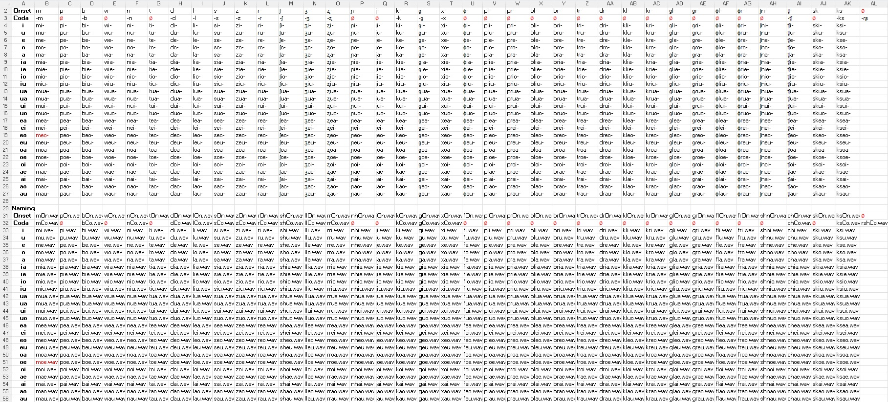
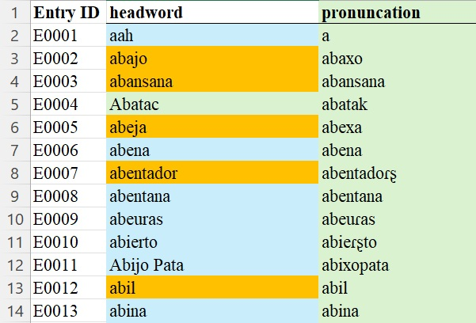
acomodana /akomodana/ how do we know if
the m is the coda of /ko-m/ or the onset of
/m-o/? Answer: it depends on what follows. If it’s a vowel,
it’s the onset, if it’s a consonant, it’s likely a coda. Therefore, in
acomodana /akomodana/ [a.ko.mo̝.ˈda.na] it’s an onset, while
in acompañana /akompaɲan/ [a.kom.ˈpa.ɲa], /p/
follows /m/ placing /p/ as the onset of
/pa/ and /m/ as the coda of
/kom/./mi/, don’t extract the token from
agradesimiento /a.ɡɾa.de.si.ˈmien.to/ as this is actually
an /mie/ sequence. Instead, look for
camisa /ka.ˈmi.sa/ where no vowel follows
i.g from
gɾ.m[aieuo][^aieuo] for open syllables
with only one vowel; m[aieuo][aieuo] for open syllables
with two vowels, and m([^aieuo]|\\s|$) for codas.acomodana and
acompañan for the mo sequence, choose the open
syllable in acomodana.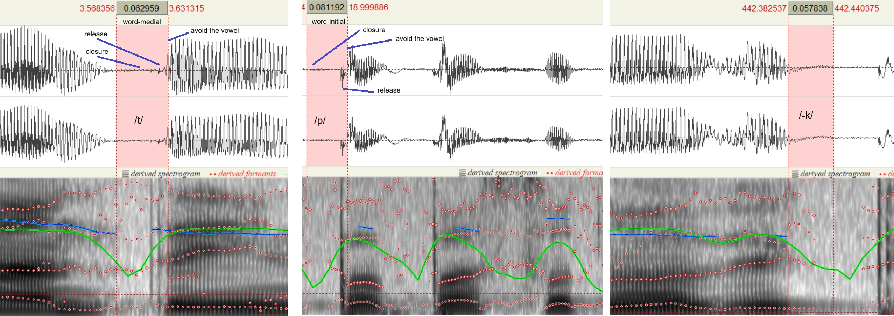
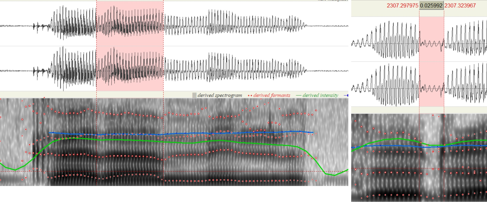
If possible avoid syllables and vowels in penultimate position.
We don’t want every token to be stressed! If we were going to continue
to build an actual tts engine using this methodology, we’d modify every
token to include correlates of stress (vowel duration, amplification,
pitch), and the save those with _stress. These would be
loaded when the segment is found in a stressed position.
If the onset/segment exists: change the font to
green.
If it does not exist: change the font to red.
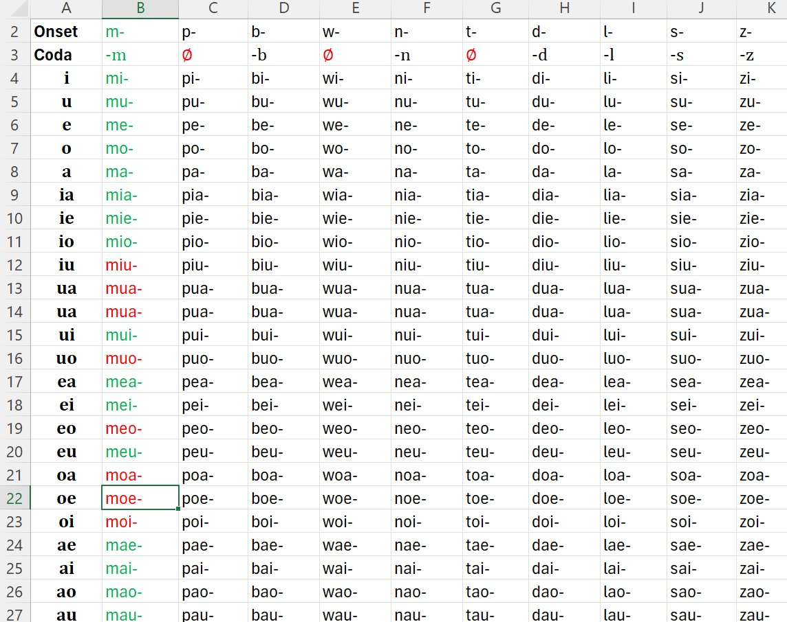
.wav file
and a corresponding .textGrid file.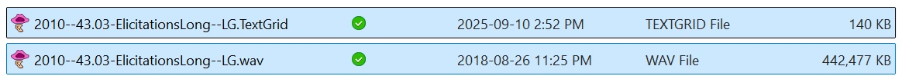
.wav files are huge.
Make sure you have space to accommodate them on your hard drive. If not,
consider purchasing a USB flash drive.
.wav file and its corresponding
.textGrid in Praat.View & Edit.ctrl+F (or cmd+F on Mac), to bring
up the search window.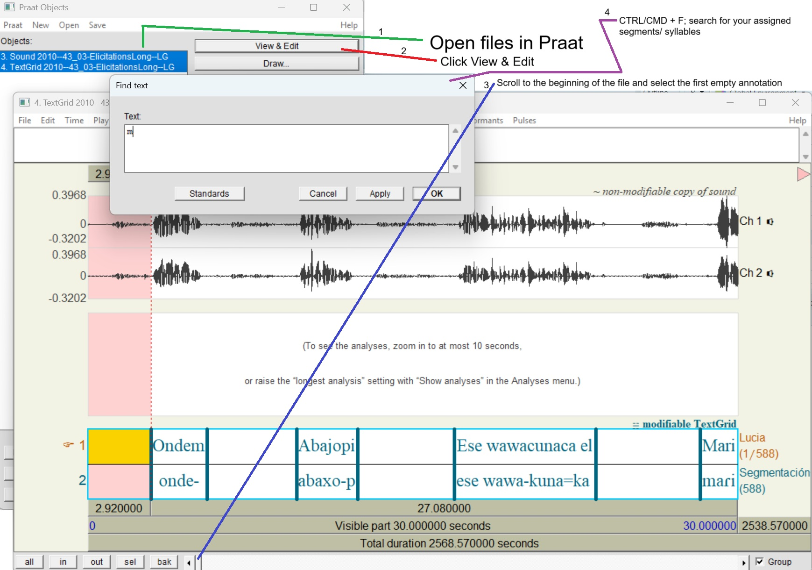
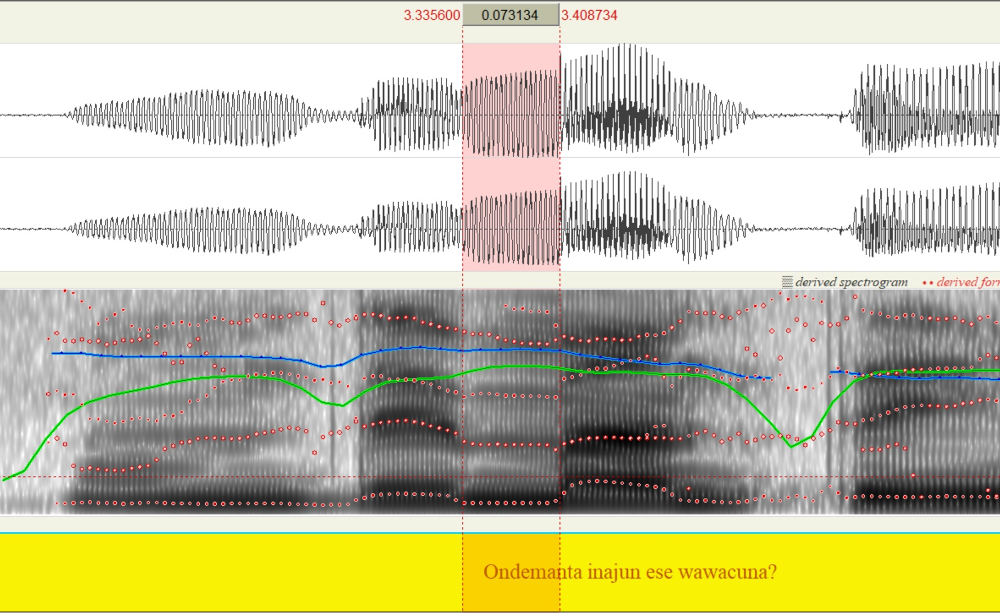
Sound → Extract selected sound (time from 0).
This will place token in the Praat Objects Window.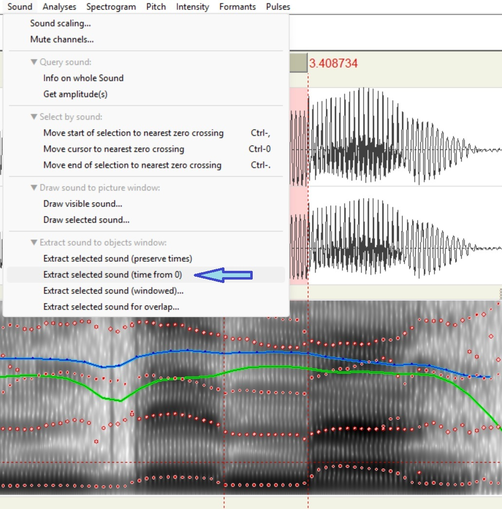
Save → Save as WAV file...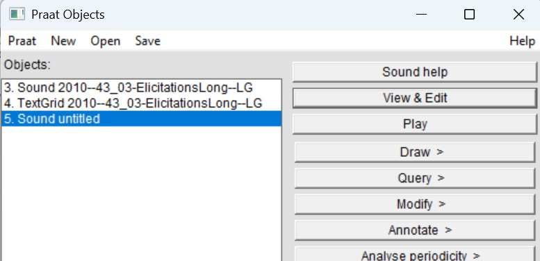
mOn.wav).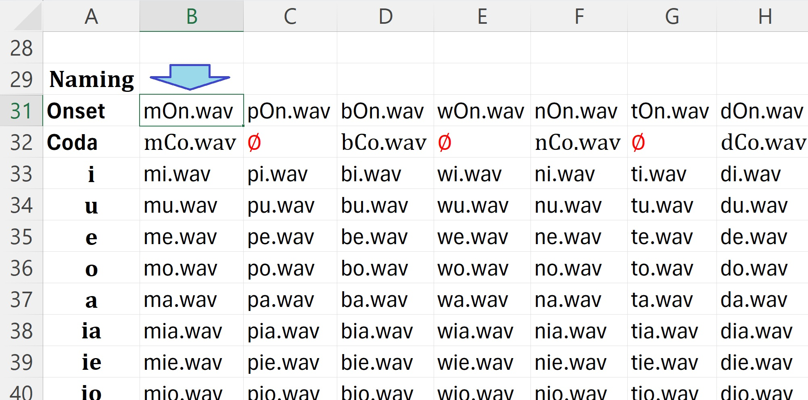
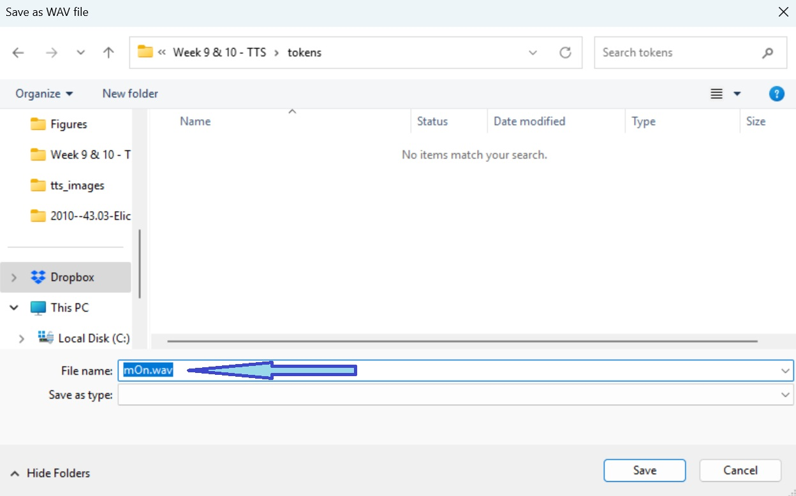
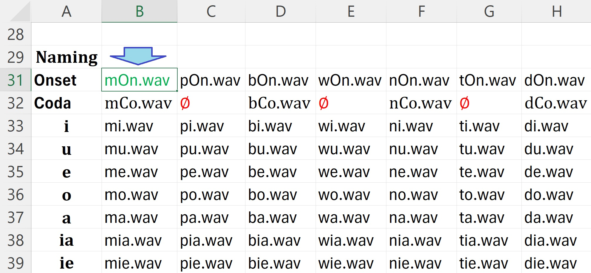
Now we’re going to repeat the process with coda
-m.
- Return to the beginning of the sound file and search a word with coda
-m or search for m until you find it in coda
position.
- Here, I found coda -m in the word siempre.
This is nice as it follows a stop consonant, so I can get the
fade.
- We then select the target portion
- Sound →
Extract selected sound (time from 0)
- Select file in the objects window, Save →
Save as WAV file...
- Use the naming convention (mCo.wav) in the second matrix,
then mark it with green.
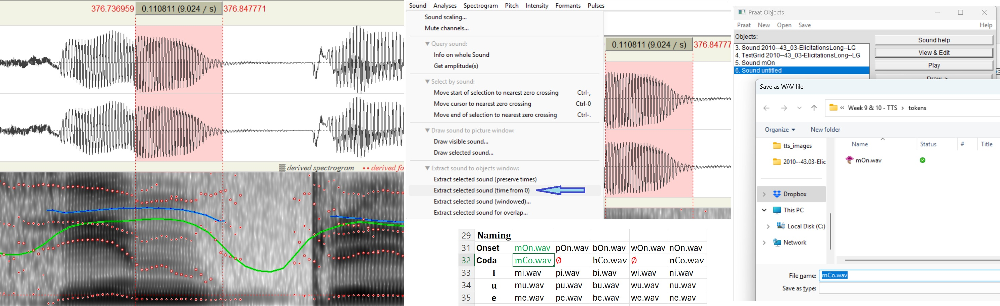
Here’s one more example with a vowel.
- Return to the beginning of the sound file and search a word containing
mi or search for mi until you find an example.
Verify that it’s an onset + vowel and ideally without a coda.
- Here, I found mi in the word comida. This is
nice as it follows a stop consonant, so I can get the fade. It was also
common at the end of words, but we don’t want too much fade
either.
- We then select the target portion
- Sound →
Extract selected sound (time from 0)
- Select file in the objects window, Save →
Save as WAV file...
- Use the naming convention (mi.wav) in the second matrix,
then mark it with green.
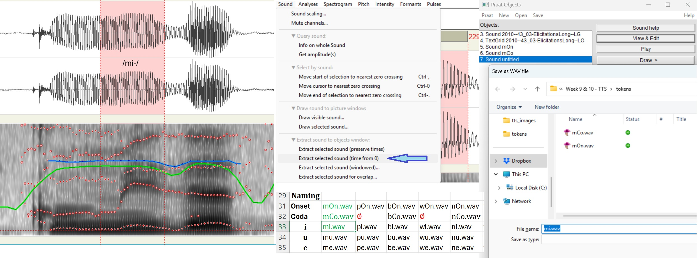
Now finish your assigned data.
A few additional things to note:
m and there were a number of gaps:mu with o, but I feel like the
m to oe transition will appear more
natural.m, and the uo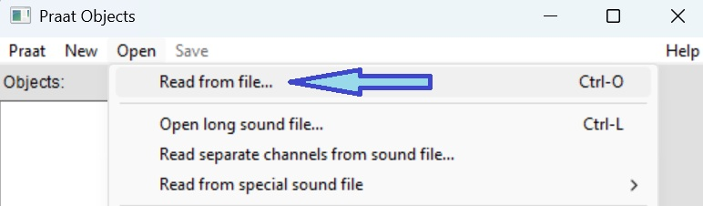
concatenate function
under combine.View & Edit the new file.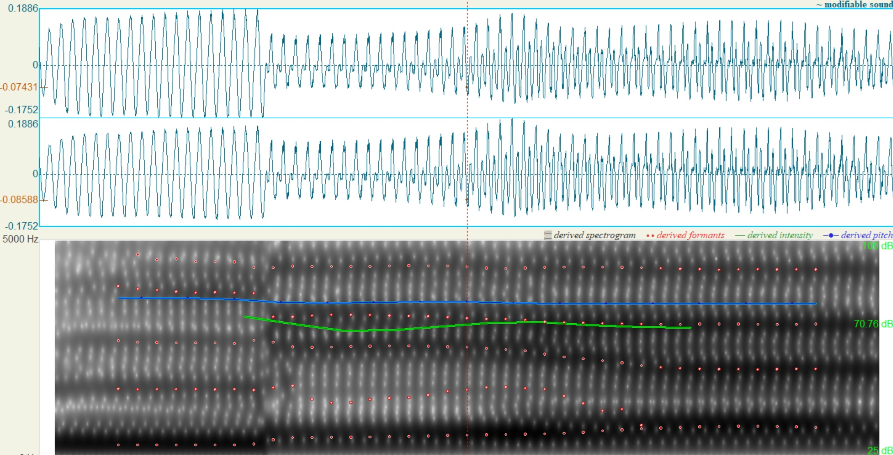
mea actually doesn’t look too bad, and
it sounds relatively natural, so we’ll keep it as-is. The image below is
from meu.ctrl+x
to cut out the bad part. This is more trial and error than anything
else.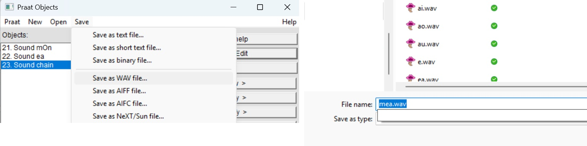
mei, meu,
mea, mao, and mau. If I were
feeling generous, I’d do miu, mua,
muo, moa, moe, and
moi as well, in case these aren’t actually gaps in the
language.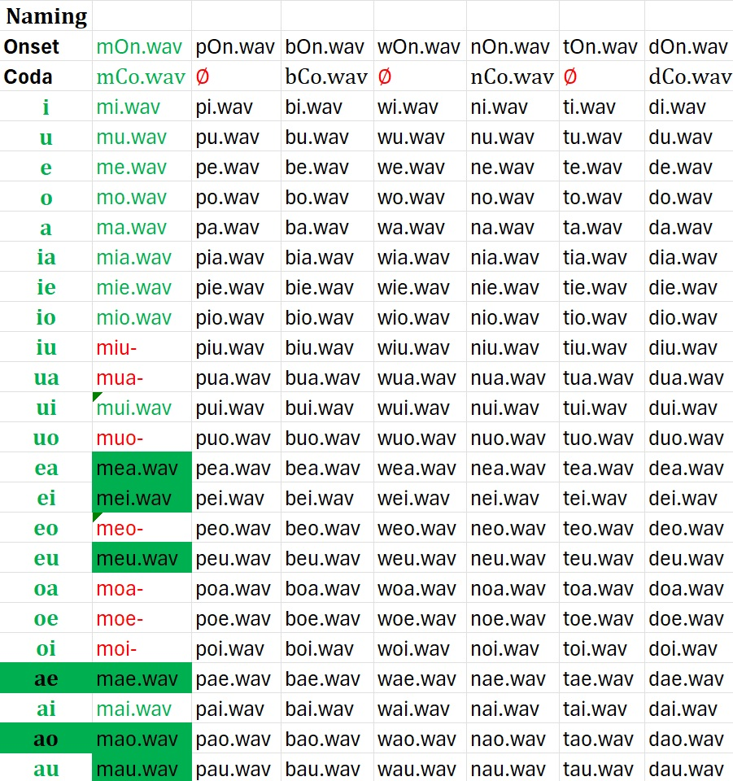
a+e and
a+o as these were not found in the sound files.We are going to place our text into an object. Our test sentence will
be:
Vospa oracionta aquipica escribipangui., which translates
to “Write your sentence here.”
ML=c("Vospa oracionta aquipica escribipangui.")Placing our text phrase in an object called ML in
orthography as a string using c().
We’re then going to convert the string to a data frame
#Converting to data frame
tts=as.data.frame(ML)Then we’ll name first column to skirt UTF-8 Header error (this really only an issue if you load the data from an external source, which we’re not doing here).
colnames(tts)[1]="Word"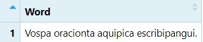
Now, we’ll transfer our text to another column for conversion to IPA. This way, we can still compare the text with the IPA.
tts$IPA=tts$Word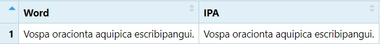
The following is a long string of regEx that converts the text to
IPA. Follow the comments therein for details.
<r> to a tap (ɾ), when I go to convert
<rr> to the voiced retroflex fricative
(ʐ), double r’s (<rr>) will have already
been converted to ɾɾ. We could convert rr to
ʐ first, but word-initial <r>’s in Media
Lengua also appear as the retroflex fricative ʐ. My fix for
this is to convert initial <r> and double
rr to a place holder (@): r to
@ (note the space), then (^r|rr) to
@. Then I convert all other <r> to a tap
(ɾ) and the convert all @ to ʐ
(note the space), and the remaining @ to
ʐ.#Punctuation removal + whitespace tidying
tts$IPA <- gsub("\\p{P}+", "", tts$IPA, perl = TRUE) # removes .,;:!?… incl. ¿ ¡
tts$IPA <- gsub("\\s+", " ", trimws(tts$IPA)) # collapse/trim spaces
#IPA conversion using regular expressions
#Converts upper case to lower case.
tts$IPA=gsub("([[:upper:]])", perl = TRUE, "\\L\\1", tts$IPA)
# Here's a list of known exceptions e.g., "Jesse" doesn't follow ML's phonotactic structure or phonological rules.
tts$IPA=gsub("manda", "manta",tts$IPA)
tts$IPA=gsub("(Jesse|jesse)", "ʒesi",tts$IPA)
tts$IPA=gsub("(todo forma, de|de todo forma)", "detodofoɾma",tts$IPA)
tts$IPA=gsub("(antes de|Antes de)", "antesde",tts$IPA)
tts$IPA=gsub("(ante ayer|Ante ayer)", "anteayer",tts$IPA)
tts$IPA=gsub("asellata", "asiʒata",tts$IPA)
tts$IPA=gsub("(gendi|gende)", "genti",tts$IPA)
#text conversion to IPA begins here
#Include the following if you're working with Imbabura Kichwa (ML does not follow these rules).
#tts$IPA=gsub("nk", "ng",tts$IPA) #Kichwa only
#tts$IPA=gsub("nt", "nd",tts$IPA) #Kichwa only
#tts$IPA=gsub("np", "nb",tts$IPA) #Kichwa only
tts$IPA=gsub("ñ", "ɲ",tts$IPA)
tts$IPA=gsub("ngue", "ngi",tts$IPA)
tts$IPA=gsub("hua", "wa",tts$IPA)
tts$IPA=gsub("ng", "ŋg",tts$IPA)
tts$IPA=gsub("nk", "ŋk",tts$IPA)
tts$IPA=gsub("ch", "ʧ",tts$IPA)
tts$IPA=gsub("sh", "ʃ",tts$IPA)
tts$IPA=gsub("ll", "ʒ",tts$IPA)
tts$IPA=gsub("(rr|^r)", "@",tts$IPA)
tts$IPA=gsub("( r)", " @",tts$IPA)
tts$IPA=gsub("r", "ɾ",tts$IPA)
tts$IPA=gsub("ɾt", "ɾʃt",tts$IPA)
tts$IPA=gsub("(ɾ )", "ɾʂ ",tts$IPA)
tts$IPA=gsub("(ɾ$)", "ɾʂ",tts$IPA)
tts$IPA=gsub(" @", " ʐ",tts$IPA)
tts$IPA=gsub("@", "ʐ",tts$IPA)
tts$IPA=gsub("cona", "kuna",tts$IPA)
tts$IPA=gsub("ce", "se",tts$IPA)
tts$IPA=gsub("ci", "si",tts$IPA)
tts$IPA=gsub("ca", "ka",tts$IPA)
tts$IPA=gsub("co", "ko",tts$IPA)
tts$IPA=gsub("cc", "ks",tts$IPA)
tts$IPA=gsub("cu", "ku",tts$IPA)
tts$IPA=gsub("cpi", "kpi",tts$IPA)
tts$IPA=gsub("c$", "k",tts$IPA)
tts$IPA=gsub("cʒ", "kʒ",tts$IPA)
tts$IPA=gsub("cl", "kl",tts$IPA)
tts$IPA=gsub("ct", "kt",tts$IPA)
tts$IPA=gsub("cʧ", "kʧ",tts$IPA)
tts$IPA=gsub("cʧ", "kʧ",tts$IPA)
tts$IPA=gsub("cs", "ks",tts$IPA)
tts$IPA=gsub("cr", "kɾ",tts$IPA)
tts$IPA=gsub("cɾ", "kɾ",tts$IPA)
tts$IPA=gsub("qu", "k",tts$IPA)
tts$IPA=gsub("x", "ks",tts$IPA)
tts$IPA=gsub("hu", "xu",tts$IPA)
tts$IPA=gsub("gui", "gi",tts$IPA)
tts$IPA=gsub("j", "x",tts$IPA)
tts$IPA=gsub("-y-", " i ",tts$IPA)
tts$IPA=gsub(" y ", " i ",tts$IPA)
tts$IPA=gsub("y ", "i ",tts$IPA)
tts$IPA=gsub("y$", "i",tts$IPA)
tts$IPA=gsub("my", "mi",tts$IPA)
tts$IPA=gsub("me ", "mi ",tts$IPA)
tts$IPA=gsub("chon ", "ʧun ",tts$IPA)
#There are some people who write <sh> as <s>. This can be fixed with the follow regEx, but it causes errors in words like "vospa" (2-POSS), which is actually /spa/, not /ʃpa/, so we'll ignore issue for now and count /ʃ/ written as <s> for now as a typo.
#tts$IPA=gsub("spaca", "ʃpaka",tts$IPA)
#tts$IPA=gsub("spa$", "ʃpa",tts$IPA)
#tts$IPA=gsub("spa ", "ʃpa ",tts$IPA)
#tts$IPA=gsub("spata", "ʃpata",tts$IPA)
#tts$IPA=gsub("spami", "ʃpami",tts$IPA)
#tts$IPA=gsub("spame", "ʃpami",tts$IPA)
#Back to the conversion script
tts$IPA=gsub("ny", "ni",tts$IPA)
tts$IPA=gsub("mary", "maɾi",tts$IPA)
tts$IPA=gsub("chy", "ʧi",tts$IPA)
tts$IPA=gsub("py", "pi",tts$IPA)
tts$IPA=gsub("y", "j",tts$IPA)
tts$IPA=gsub("nguy", "ngi",tts$IPA)
tts$IPA=gsub("gry", "gɾi",tts$IPA)
tts$IPA=gsub("shy", "ʃi",tts$IPA)
tts$IPA=gsub("chary", "ʧaɾi",tts$IPA)
tts$IPA=gsub("siky", "siki",tts$IPA)
tts$IPA=gsub("niky", "niki",tts$IPA)
tts$IPA=gsub("kuty", "kuti",tts$IPA)
tts$IPA=gsub("^v", "b",tts$IPA)
tts$IPA=gsub(" v", " b",tts$IPA)
tts$IPA=gsub("v", "β",tts$IPA)
tts$IPA=gsub("^z", "s",tts$IPA)
tts$IPA=gsub(" z", " s",tts$IPA)
tts$IPA=gsub("ts", "z",tts$IPA)
tts$IPA=gsub("tz", "z",tts$IPA)
tts$IPA=gsub("aj", "ai",tts$IPA)
tts$IPA=gsub("aw", "au",tts$IPA)
tts$IPA=gsub("aia", "aja",tts$IPA)
tts$IPA=gsub("ajai", "aiai",tts$IPA)
tts$IPA=gsub("aua", "awa",tts$IPA)
tts$IPA=gsub("auo", "awo",tts$IPA)
tts$IPA=gsub("aue", "awe",tts$IPA)
tts$IPA=gsub("aiu", "aju",tts$IPA)
tts$IPA=gsub("aui", "awi",tts$IPA)
tts$IPA=gsub("aie", "aje",tts$IPA)
tts$IPA=gsub("gua", "wa",tts$IPA)
tts$IPA=gsub("gue", "ge",tts$IPA)
tts$IPA=gsub("gui", "gi",tts$IPA)
tts$IPA=gsub("í", "i",tts$IPA)
tts$IPA=gsub("é", "e",tts$IPA)
tts$IPA=gsub("á", "a",tts$IPA)
tts$IPA=gsub("ó", "o",tts$IPA)
tts$IPA=gsub("ú", "u",tts$IPA)
#tts$IPA=gsub("o", "u",tts$IPA) #Kichwa only
#tts$IPA=gsub("e", "i",tts$IPA) #Kichwa only
tts$IPA=gsub("g", "ɡ",tts$IPA)
tts$IPA=gsub("f", "ɸ",tts$IPA)
tts$IPA=gsub("h", "",tts$IPA)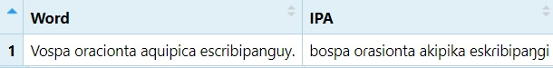
After converting the text to broad IPA, we’re going to convert the
transcription to syllables so we can later identify the associated wave
file with each segment/ syllable. To begin, we pass the IPA
transcription to a new column called Syllable.
tts$Syllable=tts$IPA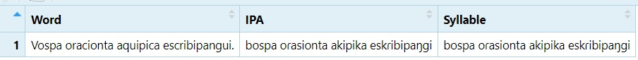
Now the syllabification process begins.
Here, we convert spaces to ‘%’, vowels to ‘V’, onset clusters to $$ and
single consonants to ‘C’, and onset-coda clusters to CC (this happens
automatically in the 3rd step).
tts$Syllable=gsub(" ", "%",tts$Syllable)
tts$Syllable=gsub("(pl|pɾ|bl|bɾ|tɾ|dɾ|kl|kɾ|ɡl|ɡɾ|ɸl|ɸɾ|ʃn)", "$$",tts$Syllable)
tts$Syllable=gsub("[^aeoiu%$]", "C",tts$Syllable)
tts$Syllable=gsub("[aeoiu]", "V",tts$Syllable)This is a three step process.
%)[^aeoiu]) and
% to C.[^aeoiu]) to V.s is a special case. I’ll discuss it below.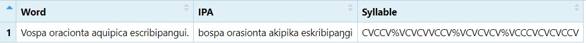
Now we have to understand Media Lengua’s syllable structure.
Media Lengua is a (C)(C)V(V)(C)(C) language.
Special cases:
In VCC sequencies, the vowel stands alone
(V.CC)
s. In these cases, s
functions as the coda.s appears in coda position and
k as onset.
Understanding this, we can now insert syllable breaks into the syllable sequences.
#1
tts$Syllable=gsub("VCC", "VC.C",tts$Syllable)
#2
tts$Syllable=gsub("VC", "V.C",tts$Syllable)
#3
tts$Syllable=gsub("V\\.C\\.C", "VC.C",tts$Syllable)
#4
tts$Syllable=gsub("\\$\\$", ".CC",tts$Syllable)
#5
tts$Syllable=gsub("C\\.C\\.CC", "CC.CC",tts$Syllable)
#6
tts$Syllable=gsub("V\\.C\\.CC", "VC.CC",tts$Syllable)
#7
tts$Syllable=gsub("C\\.C%", "CC%",tts$Syllable)
#8
tts$Syllable=gsub("C\\.C$", "CC",tts$Syllable)VC.C.VCCV → VC.CV.$$. Media Lengua generally doesn’t allow two
arbitrary consonants (non clusters) at the onset; so break them
up into a coda + onset.sk clusters break the sonority hierarchy “rule”
on a micro-scale as fricatives are more sonorous than stops. Recall that
more sonorous segments should be closer to the vowel nucleus and less
sonorous segments should be further away. Therefore, we get /es.kwe.la/
rather than */e.skwe.la/. Also note that /ks/ functions more like an
affricate, allowing it to form a coda.VCV → V.CVV.C.C (two dots
splitting a coda cluster), collapse it back to VC.C.V.C.CV → VC.CV.$$ (like
pl, pɾ, bl, bɾ,
tɾ, dɾ, kl, kɾ,
gl, gɾ, ɸl, ɸɾ,
ʃn)..CC. We can now mark them as valid
two-consonant onsets since we’ve taken care of onset-coda cluster
sequenciesC.C.CC is created, collapse it to
CC.CC.VC.C.CCV → VCC.CCV as in
extrangero /eks.tɾaŋ.ɡe.ɾo/ ‘foreigner’V.C.CCV becomes
VC.CCV as in **escribina* /es.kɾi.bi.na/ ‘write’C.C% → CC%C.C is
collapsed to CC.
I tested the syllable structure with the following words:
Vospa oracionta aquipica escribipangui Tuyu mamaca nalichu ese cotsata pero este extranjeroca si todo bienmi atsirca. extrangero etrangero escuela pensamiento centimetro coznana, flor, ans
This resulted in the following structure:
CVC.CV%V.CV.CVVC.CV%V.CV.CV.CV%VC.CCV.CV.CVC.CV%CV.CV%CV.CV.CV%CV.CV.CV%V.CV%CV.CV.CV%CV.CV%VC.CV%VCC.CCVC.CV.CV.CV%CV%CV.CV%CVVC.CV%V.CVC.CV%VCC.CCVC.CV.CV%V.CCVC.CV.CV%VC.CVV.CV%CVC.CV.CVVC.CV%CVC.CV.CV.CCV%CVC.CV.CV%.CCVCC%VCC
We now have to clean this up.
tts$Syllable=gsub("%\\.", "",tts$Syllable)
tts$Syllable=gsub("^\\.", "",tts$Syllable)
tts$Syllable=gsub("\\.$", "",tts$Syllable)
tts$Syllable=gsub("%", " ",tts$Syllable).CC) (this appears in flor in this data). The
first line does this when a word with an initial cluster appears after a
space, and the second line does the same in utterance-initial
position.C.%) (none appeared in the test data)% back to space
(CVC.CV V.CV.CVVC.CV V.CV.CV.CV VC.CCV.CV.CVC.CV CV.CV CV.CV.CV CV.CV.CV V.CV CV.CV.CV CV.CV VC.CV VCC.CCVC.CV.CV.CV CV CV.CV CVVC.CV V.CVC.CV VCC.CCVC.CV.CV V.CCVC.CV.CV VC.CVV.CV CVC.CV.CVVC.CV CVC.CV.CV.CCV CVC.CV.CV CCVCC VCC
breaks.tts$breaks=tts$IPA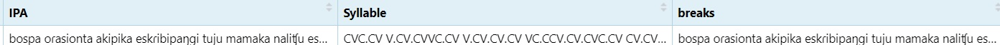
We’re now going to use the strsplit function, which is
an r-basic function. It basically means “split the string at every
character”.
cvs = strsplit(tts$Syllable, "")[[1]]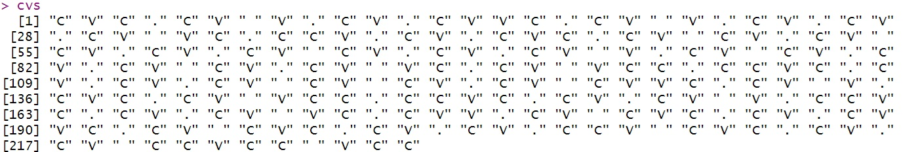
We then count the number of syllable breaks (periods) in the
cvs object. We’ll use this in our
for loop.
num_dots <- sum(cvs == ".")45
Next, we set up a for loop to place
the syllable breaks in the IPA transcription.
for (i in 1:num_dots){
segments = strsplit(tts$breaks, "")[[1]]
cvs = strsplit(tts$Syllable, "")[[1]]
current_dot <- which(cvs == ".")[i]
current_dot = current_dot - 1
insert <- append(segments, ".", after = current_dot)
insert_str <- paste0(insert, collapse = "")
tts$breaks <- insert_str
}i is the place holder.1:num_dots increases the place holder on each loop
beginning with 1 and going to 45 (our value in num_dots) - we create a
new object called segment where we add in the
breaks column (our IPA transcription) split into
characters. We’re going doing this on the first row [[1]]. If we had
multiple rows, we’d have to add in an additional for loop
and I don’t want to put you through that.Syllable. We did this
previously in cvs, but I’m placing it again in the
loop.current_dot contains the position of each syllable
break in cvs and changes to the next position on each
iteration (i).append to put the period. This gets added
to the object named insert.breaks to it can
be iterated through once again in the loop.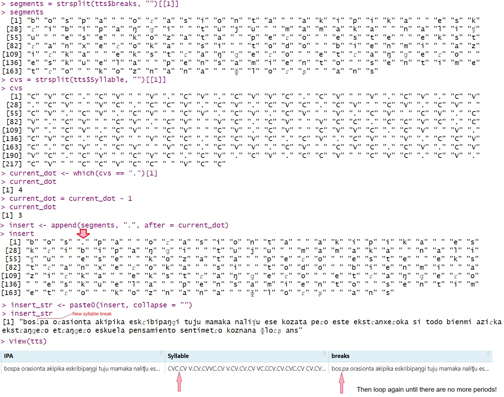
NOW, everything we did would be great if we
collected a token for each possible syllable combination. We’ve
currently attempted to collect viable tokens by searching through
927 possible combinations. These include:
a, i, u, o, e)m-, p- ɸ-, ʃ- etc.)ma-, pi-, ɸo-, ʃu- etc.)tɾ-, pɾi-, ɸlo-, ʃna- etc.)-m, -n, -l, -s etc.)-ɾʂ)pauses a short pause
between words (which really doesn’t exist in natural speech); and a
utterance or ‘comma’ pause, which can exist in natural speech.If we had attempted to collect every possible syllable combination
e.g., roughly the 972 open syllable tokens with every potential coda
(e.g., sion, tɾam, plas etc.), we would have had to sift
through over 16,000 + syllable combinations. Obviously not
all of these combinations exist in the language (in fact a majority do
not), but the number (and thus workload) would still be high!
Because we didn’t do this, we need to structure our syllables based
on the token pattern we collected.
Do do this, we just need to isolate codas, which is actually
straightforward.
tts$Syl_tts=tts$Syllable
tts$Syl_tts=gsub("VC", "V.C.",tts$Syl_tts)
tts$Syl_tts=gsub("V.C.C", "V.CC.",tts$Syl_tts)Here, wherever we have a coda, indicated by a syllable break followed by an onset, we just add a period before the coda isolating it.
VC.C → V.C..C
V.C.C → V.CC.
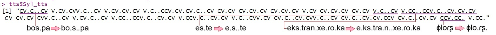
As you can see in the previous image, we now have double syllable
breaks that need to be changed to single breaks. And we potentially
syllable breaks at the end of the utterance or at the end of a word. We
need to clean these up by converting double breaks (..) to
single breaks (.) and removing breaks at the end of words
(. → ) and the utterance (.$ →
∅).
tts$Syl_tts=gsub("\\.\\.", ".",tts$Syl_tts)
tts$Syl_tts=gsub("\\.$", "",tts$Syl_tts)
tts$Syl_tts=gsub("\\. ", " ",tts$Syl_tts).. → . as in V.C..C → V.C.C
. → 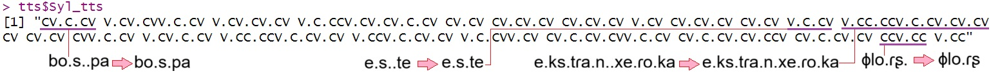
Now we can create a new column with the IPA transcription to insert the syllable breaks that aling with our tts tokens.
tts$breaks_tts=tts$IPAIn both breaks_tts and Syl_tts, I’m going
to substitute spaces () for P which will
insert a pause between each word. I have this set to 80 ms, just so we
can more readily identify word boundaries. In natural speech, an actual
pause between each word does not happen!
tts$Syl_tts=gsub(" ", "P",tts$Syl_tts)
tts$breaks_tts=gsub(" ", "P",tts$breaks_tts)P in the Syl_tts column.P in the breaks_tts column.Next, we just repeat the previous code as we prep for the
for loop.
cvs_tts = strsplit(tts$Syl_tts, "")[[1]]
num_dots_tts <- sum(cvs_tts == ".")cvs_tts splits the string into individual
characters.num_dots_tts counts the number of syllable breaks
(periods).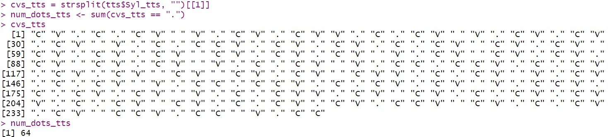
This is the exact same for loop previously described,
but with the new column names replacing the old.
for (i in 1:num_dots_tts){
segments1 = strsplit(tts$breaks_tts, "")[[1]]
cvs_tss = strsplit(tts$Syl_tts, "")[[1]]
current_dot <- which(cvs_tts == ".")[i]
current_dot = current_dot - 1
insert <- append(segments1, ".", after = current_dot)
insert_str <- paste0(insert, collapse = "")
tts$breaks_tts <- insert_str
}
Now we’re going to codify the transcription
#1
tts$breaks_tts=gsub("\\.(.)\\.", ".C\\1.", tts$breaks_tts)
#2
tts$breaks_tts=gsub("\\.([^aeiou])P", ".C\\1P", tts$breaks_tts)
#3
tts$breaks_tts=gsub("\\.([^aeiou][^aeiou])\\.", ".C\\1.", tts$breaks_tts)
#4
tts$breaks_tts=gsub("\\.([^aeiou][^aeiou])P", ".C\\1P", tts$breaks_tts)
#5
tts$breaks_tts=gsub("\\.([^aeiou][^aeiou])$", ".C\\1", tts$breaks_tts)
#6
tts$breaks_tts=gsub("CC", "C", tts$breaks_tts)
#7
tts$breaks_tts=gsub("P", ".P.", tts$breaks_tts).) in parentheses keeps
whatever it is and allows us to insert back in using \\1 in
the replacement function. This marks all codas with a C.
Capital C is not an IPA character, so it won’t get in the
way. Lower case c is an IPA character.
C when the word ends in a
non-vowel (consonant) followed by a Pause
(\\.[^aeiou]P)CC to C. Double
CC’s were created in the process.pause
wave file later on.
P as a meta character since it’s
not IPA. Make sure it’s capitalized though as lower case p
is an IPA character.Our string is now parsed up in accordance with our wave files.
Next, we tell r where our files are located on our harddrive.
units_dir = "C:/Courses/CompLING/tts/tokens" -Here, we put our directory name in the object called
units_dir.
Now, We now have to tell R what the IPA and sound file equivalences are. Basically, we need to link up the segmented transcriptions, based on the periods, to the sound files. To do this, we need to write a large object that says “IPA symbol X = wave file X”. We’re going to build this in Excel since that’s were we have our original “potential syllables” are located. Copy your data into two rows. The first row will be every token you cut in IPA. Like so:
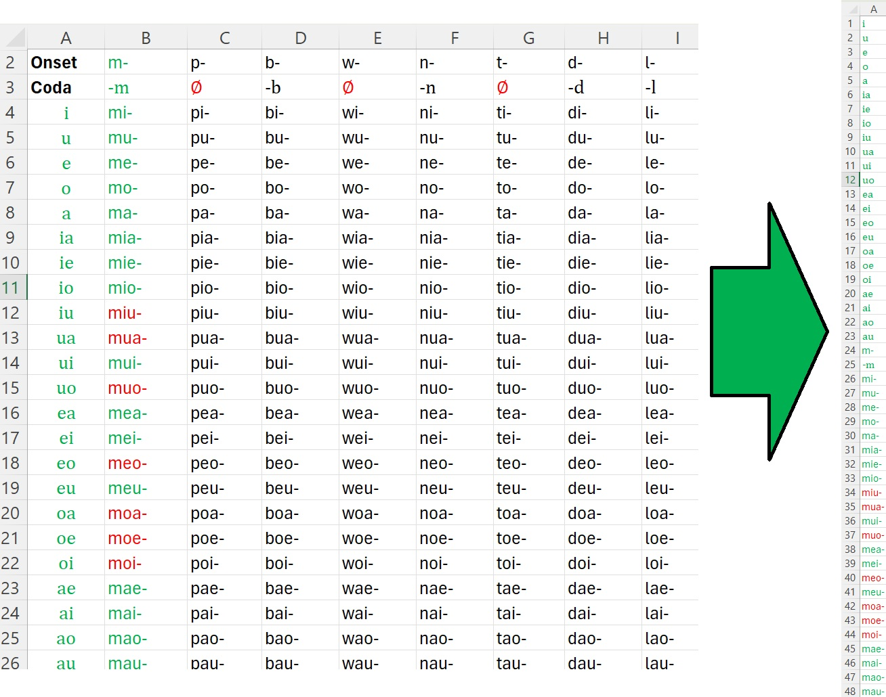
Then we place the file names of each token from the second matrix in the spreadsheet.
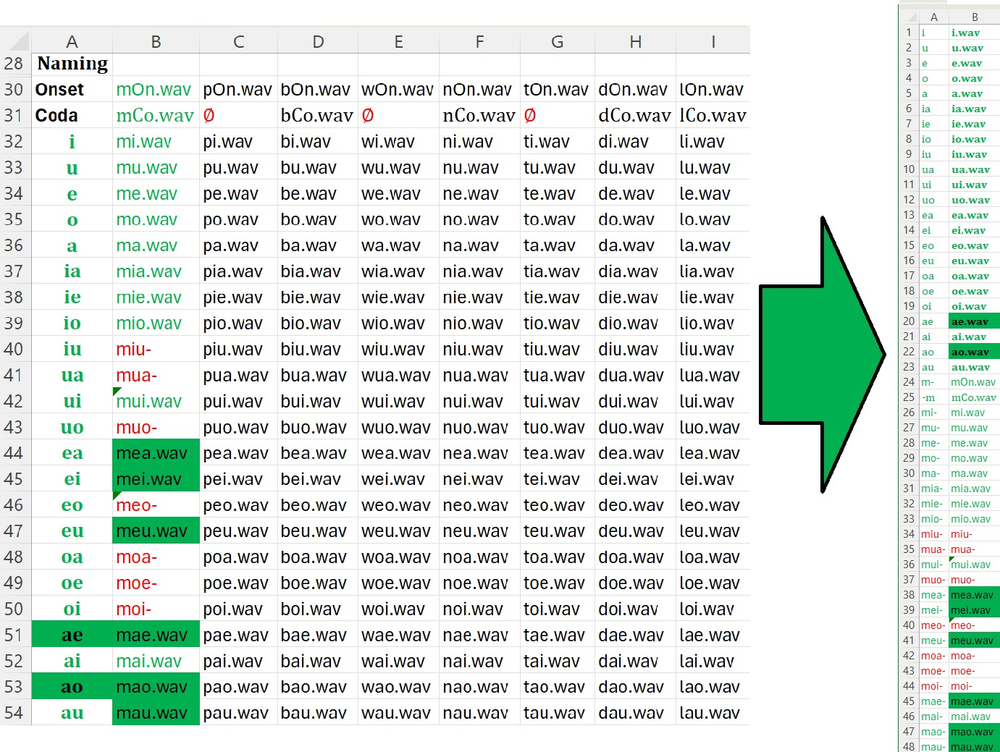
Next, in column C, we entire the following code:
=A1&" = file.path(units_dir,"""&B1&"""),"This code reads: - Copy the contents of cell A1 (the IPA
symbol) and (&) the text
= file.path(units_dir," (this will be r code assigning the
name of the wave file to the object (the IPA symbol) once we copy it
over). - The final quote needs to be escaped as it’s a meta character in
Excel. To escape a meta character (and to make things more complicated,
we use another quote; so "". We then have our closed quote,
so """ 🙄.
- And (&) then we copy in the contents of B1 (the name
of the associated wave file).
- Then we add the following text after B1 ", - The first
and last quotes encapsulate the text. The second quote removes the meta
character function of the third quote, which is now text, so
"""🙄, followed by a comma, resulting in "),.
This will be r code to close the name of the wave file and the comma is
used to start the next line.
- We then pull this code to the bottom of the data (or double click the
box in the bottom right corner of the cell)
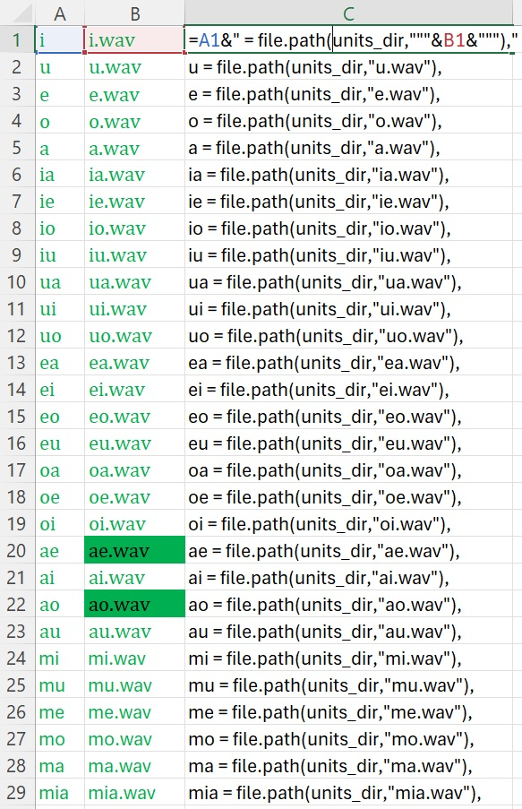
We could remove the text in red, but in the off chance that these represent actual syllables, which were not picked up in the dictionary, we’ll keep them. Better unused lines of code that might be useable in the future, rather than missing lines of code that we have to replace later. Some may disagree, but I’m more about practicality than efficiency of the code (this might be heresy to some programmers).
We then copy this string of code into our text editor (make sure it’s set for UTF-8), then paste it in.
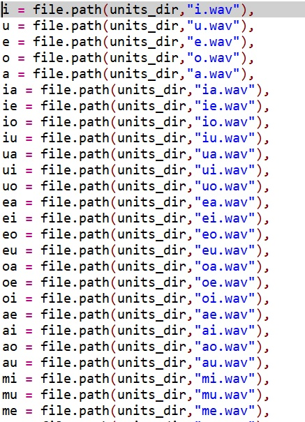
Then, at the top, we’ll define our object name, and encapsulate the
code in c().
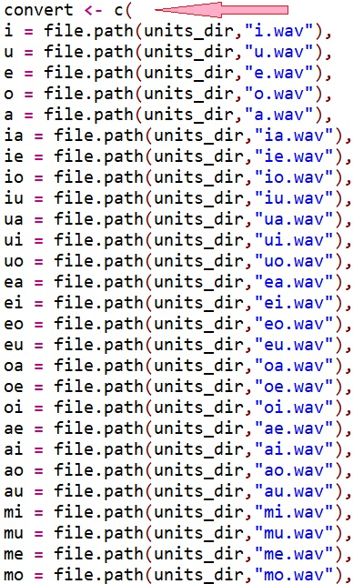
Finally, at the bottom of the code, we’re going to add two more
strings.
One for pauses between words and one for utterance final or ‘comma’
pauses.
P = file.path(units_dir,"pause.wav"),
D = file.path(units_dir,"dot.wav")
)NOTE: The final string does not end in a comma as
there is no continuation. A final parenthesis ()), is also
needed to close off the string.
convert <- c(
i = file.path(units_dir,"i.wav"),
u = file.path(units_dir,"u.wav"),
e = file.path(units_dir,"e.wav"),
o = file.path(units_dir,"o.wav"),
a = file.path(units_dir,"a.wav"),
ia = file.path(units_dir,"ia.wav"),
ie = file.path(units_dir,"ie.wav"),
io = file.path(units_dir,"io.wav"),
iu = file.path(units_dir,"iu.wav"),
ua = file.path(units_dir,"ua.wav"),
ui = file.path(units_dir,"ui.wav"),
uo = file.path(units_dir,"uo.wav"),
ea = file.path(units_dir,"ea.wav"),
ei = file.path(units_dir,"ei.wav"),
eo = file.path(units_dir,"eo.wav"),
eu = file.path(units_dir,"eu.wav"),
oa = file.path(units_dir,"oa.wav"),
oe = file.path(units_dir,"oe.wav"),
oi = file.path(units_dir,"oi.wav"),
ae = file.path(units_dir,"ae.wav"),
ai = file.path(units_dir,"ai.wav"),
ao = file.path(units_dir,"ao.wav"),
au = file.path(units_dir,"au.wav"),
mi = file.path(units_dir,"mi.wav"),
mu = file.path(units_dir,"mu.wav"),
me = file.path(units_dir,"me.wav"),
mo = file.path(units_dir,"mo.wav"),
ma = file.path(units_dir,"ma.wav"),
mia = file.path(units_dir,"mia.wav"),
mie = file.path(units_dir,"mie.wav"),
mio = file.path(units_dir,"mio.wav"),
miu = file.path(units_dir,"miu.wav"),
mua = file.path(units_dir,"mua.wav"),
mui = file.path(units_dir,"mui.wav"),
muo = file.path(units_dir,"muo.wav"),
mea = file.path(units_dir,"mea.wav"),
mei = file.path(units_dir,"mei.wav"),
meo = file.path(units_dir,"meo.wav"),
meu = file.path(units_dir,"meu.wav"),
moa = file.path(units_dir,"moa.wav"),
moe = file.path(units_dir,"moe.wav"),
moi = file.path(units_dir,"moi.wav"),
mae = file.path(units_dir,"mae.wav"),
mai = file.path(units_dir,"mai.wav"),
mao = file.path(units_dir,"mao.wav"),
mau = file.path(units_dir,"mau.wav"),
pi = file.path(units_dir,"pi.wav"),
pu = file.path(units_dir,"pu.wav"),
pe = file.path(units_dir,"pe.wav"),
po = file.path(units_dir,"po.wav"),
pa = file.path(units_dir,"pa.wav"),
pia = file.path(units_dir,"pia.wav"),
pie = file.path(units_dir,"pie.wav"),
pio = file.path(units_dir,"pio.wav"),
piu = file.path(units_dir,"piu.wav"),
pua = file.path(units_dir,"pua.wav"),
pui = file.path(units_dir,"pui.wav"),
puo = file.path(units_dir,"puo.wav"),
pea = file.path(units_dir,"pea.wav"),
pei = file.path(units_dir,"pei.wav"),
peo = file.path(units_dir,"peo.wav"),
peu = file.path(units_dir,"peu.wav"),
poa = file.path(units_dir,"poa.wav"),
poe = file.path(units_dir,"poe.wav"),
poi = file.path(units_dir,"poi.wav"),
pae = file.path(units_dir,"pae.wav"),
pai = file.path(units_dir,"pai.wav"),
pao = file.path(units_dir,"pao.wav"),
pau = file.path(units_dir,"pau.wav"),
bi = file.path(units_dir,"bi.wav"),
bu = file.path(units_dir,"bu.wav"),
be = file.path(units_dir,"be.wav"),
bo = file.path(units_dir,"bo.wav"),
ba = file.path(units_dir,"ba.wav"),
bia = file.path(units_dir,"bia.wav"),
bie = file.path(units_dir,"bie.wav"),
bio = file.path(units_dir,"bio.wav"),
biu = file.path(units_dir,"biu.wav"),
bua = file.path(units_dir,"bua.wav"),
bui = file.path(units_dir,"bui.wav"),
buo = file.path(units_dir,"buo.wav"),
bea = file.path(units_dir,"bea.wav"),
bei = file.path(units_dir,"bei.wav"),
beo = file.path(units_dir,"beo.wav"),
beu = file.path(units_dir,"beu.wav"),
boa = file.path(units_dir,"boa.wav"),
boe = file.path(units_dir,"boe.wav"),
boi = file.path(units_dir,"boi.wav"),
bae = file.path(units_dir,"bae.wav"),
bai = file.path(units_dir,"bai.wav"),
bao = file.path(units_dir,"bao.wav"),
bau = file.path(units_dir,"bau.wav"),
wi = file.path(units_dir,"wi.wav"),
wu = file.path(units_dir,"wu.wav"),
we = file.path(units_dir,"we.wav"),
wo = file.path(units_dir,"wo.wav"),
wa = file.path(units_dir,"wa.wav"),
wia = file.path(units_dir,"wia.wav"),
wie = file.path(units_dir,"wie.wav"),
wio = file.path(units_dir,"wio.wav"),
wiu = file.path(units_dir,"wiu.wav"),
wua = file.path(units_dir,"wua.wav"),
wui = file.path(units_dir,"wui.wav"),
wuo = file.path(units_dir,"wuo.wav"),
wea = file.path(units_dir,"wea.wav"),
wei = file.path(units_dir,"wei.wav"),
weo = file.path(units_dir,"weo.wav"),
weu = file.path(units_dir,"weu.wav"),
woa = file.path(units_dir,"woa.wav"),
woe = file.path(units_dir,"woe.wav"),
woi = file.path(units_dir,"woi.wav"),
wae = file.path(units_dir,"wae.wav"),
wai = file.path(units_dir,"wai.wav"),
wao = file.path(units_dir,"wao.wav"),
wau = file.path(units_dir,"wau.wav"),
ni = file.path(units_dir,"ni.wav"),
nu = file.path(units_dir,"nu.wav"),
ne = file.path(units_dir,"ne.wav"),
no = file.path(units_dir,"no.wav"),
na = file.path(units_dir,"na.wav"),
nia = file.path(units_dir,"nia.wav"),
nie = file.path(units_dir,"nie.wav"),
nio = file.path(units_dir,"nio.wav"),
niu = file.path(units_dir,"niu.wav"),
nua = file.path(units_dir,"nua.wav"),
nui = file.path(units_dir,"nui.wav"),
nuo = file.path(units_dir,"nuo.wav"),
nea = file.path(units_dir,"nea.wav"),
nei = file.path(units_dir,"nei.wav"),
neo = file.path(units_dir,"neo.wav"),
neu = file.path(units_dir,"neu.wav"),
noa = file.path(units_dir,"noa.wav"),
noe = file.path(units_dir,"noe.wav"),
noi = file.path(units_dir,"noi.wav"),
nae = file.path(units_dir,"nae.wav"),
nai = file.path(units_dir,"nai.wav"),
nao = file.path(units_dir,"nao.wav"),
nau = file.path(units_dir,"nau.wav"),
ti = file.path(units_dir,"ti.wav"),
tu = file.path(units_dir,"tu.wav"),
te = file.path(units_dir,"te.wav"),
to = file.path(units_dir,"to.wav"),
ta = file.path(units_dir,"ta.wav"),
tia = file.path(units_dir,"tia.wav"),
tie = file.path(units_dir,"tie.wav"),
tio = file.path(units_dir,"tio.wav"),
tiu = file.path(units_dir,"tiu.wav"),
tua = file.path(units_dir,"tua.wav"),
tui = file.path(units_dir,"tui.wav"),
tuo = file.path(units_dir,"tuo.wav"),
tea = file.path(units_dir,"tea.wav"),
tei = file.path(units_dir,"tei.wav"),
teo = file.path(units_dir,"teo.wav"),
teu = file.path(units_dir,"teu.wav"),
toa = file.path(units_dir,"toa.wav"),
toe = file.path(units_dir,"toe.wav"),
toi = file.path(units_dir,"toi.wav"),
tae = file.path(units_dir,"tae.wav"),
tai = file.path(units_dir,"tai.wav"),
tao = file.path(units_dir,"tao.wav"),
tau = file.path(units_dir,"tau.wav"),
di = file.path(units_dir,"di.wav"),
du = file.path(units_dir,"du.wav"),
de = file.path(units_dir,"de.wav"),
do = file.path(units_dir,"do.wav"),
da = file.path(units_dir,"da.wav"),
dia = file.path(units_dir,"dia.wav"),
die = file.path(units_dir,"die.wav"),
dio = file.path(units_dir,"dio.wav"),
diu = file.path(units_dir,"diu.wav"),
dua = file.path(units_dir,"dua.wav"),
dui = file.path(units_dir,"dui.wav"),
duo = file.path(units_dir,"duo.wav"),
dea = file.path(units_dir,"dea.wav"),
dei = file.path(units_dir,"dei.wav"),
deo = file.path(units_dir,"deo.wav"),
deu = file.path(units_dir,"deu.wav"),
doa = file.path(units_dir,"doa.wav"),
doe = file.path(units_dir,"doe.wav"),
doi = file.path(units_dir,"doi.wav"),
dae = file.path(units_dir,"dae.wav"),
dai = file.path(units_dir,"dai.wav"),
dao = file.path(units_dir,"dao.wav"),
dau = file.path(units_dir,"dau.wav"),
li = file.path(units_dir,"li.wav"),
lu = file.path(units_dir,"lu.wav"),
le = file.path(units_dir,"le.wav"),
lo = file.path(units_dir,"lo.wav"),
la = file.path(units_dir,"la.wav"),
lia = file.path(units_dir,"lia.wav"),
lie = file.path(units_dir,"lie.wav"),
lio = file.path(units_dir,"lio.wav"),
liu = file.path(units_dir,"liu.wav"),
lua = file.path(units_dir,"lua.wav"),
lui = file.path(units_dir,"lui.wav"),
luo = file.path(units_dir,"luo.wav"),
lea = file.path(units_dir,"lea.wav"),
lei = file.path(units_dir,"lei.wav"),
leo = file.path(units_dir,"leo.wav"),
leu = file.path(units_dir,"leu.wav"),
loa = file.path(units_dir,"loa.wav"),
loe = file.path(units_dir,"loe.wav"),
loi = file.path(units_dir,"loi.wav"),
lae = file.path(units_dir,"lae.wav"),
lai = file.path(units_dir,"lai.wav"),
lao = file.path(units_dir,"lao.wav"),
lau = file.path(units_dir,"lau.wav"),
si = file.path(units_dir,"si.wav"),
su = file.path(units_dir,"su.wav"),
se = file.path(units_dir,"se.wav"),
so = file.path(units_dir,"so.wav"),
sa = file.path(units_dir,"sa.wav"),
sia = file.path(units_dir,"sia.wav"),
sie = file.path(units_dir,"sie.wav"),
sio = file.path(units_dir,"sio.wav"),
siu = file.path(units_dir,"siu.wav"),
sua = file.path(units_dir,"sua.wav"),
sui = file.path(units_dir,"sui.wav"),
suo = file.path(units_dir,"suo.wav"),
sea = file.path(units_dir,"sea.wav"),
sei = file.path(units_dir,"sei.wav"),
seo = file.path(units_dir,"seo.wav"),
seu = file.path(units_dir,"seu.wav"),
soa = file.path(units_dir,"soa.wav"),
soe = file.path(units_dir,"soe.wav"),
soi = file.path(units_dir,"soi.wav"),
sae = file.path(units_dir,"sae.wav"),
sai = file.path(units_dir,"sai.wav"),
sao = file.path(units_dir,"sao.wav"),
sau = file.path(units_dir,"sau.wav"),
zi = file.path(units_dir,"zi.wav"),
zu = file.path(units_dir,"zu.wav"),
ze = file.path(units_dir,"ze.wav"),
zo = file.path(units_dir,"zo.wav"),
za = file.path(units_dir,"za.wav"),
zia = file.path(units_dir,"zia.wav"),
zie = file.path(units_dir,"zie.wav"),
zio = file.path(units_dir,"zio.wav"),
ziu = file.path(units_dir,"ziu.wav"),
zua = file.path(units_dir,"zua.wav"),
zui = file.path(units_dir,"zui.wav"),
zuo = file.path(units_dir,"zuo.wav"),
zea = file.path(units_dir,"zea.wav"),
zei = file.path(units_dir,"zei.wav"),
zeo = file.path(units_dir,"zeo.wav"),
zeu = file.path(units_dir,"zeu.wav"),
zoa = file.path(units_dir,"zoa.wav"),
zoe = file.path(units_dir,"zoe.wav"),
zoi = file.path(units_dir,"zoi.wav"),
zae = file.path(units_dir,"zae.wav"),
zai = file.path(units_dir,"zai.wav"),
zao = file.path(units_dir,"zao.wav"),
zau = file.path(units_dir,"zau.wav"),
ɾi = file.path(units_dir,"ri.wav"),
ɾu = file.path(units_dir,"ru.wav"),
ɾe = file.path(units_dir,"re.wav"),
ɾo = file.path(units_dir,"ro.wav"),
ɾa = file.path(units_dir,"ra.wav"),
ɾia = file.path(units_dir,"ria.wav"),
ɾie = file.path(units_dir,"rie.wav"),
ɾio = file.path(units_dir,"rio.wav"),
ɾiu = file.path(units_dir,"riu.wav"),
ɾua = file.path(units_dir,"rua.wav"),
ɾui = file.path(units_dir,"rui.wav"),
ɾuo = file.path(units_dir,"ruo.wav"),
ɾea = file.path(units_dir,"rea.wav"),
ɾei = file.path(units_dir,"rei.wav"),
ɾeo = file.path(units_dir,"reo.wav"),
ɾeu = file.path(units_dir,"reu.wav"),
ɾoa = file.path(units_dir,"roa.wav"),
ɾoe = file.path(units_dir,"roe.wav"),
ɾoi = file.path(units_dir,"roi.wav"),
ɾae = file.path(units_dir,"rae.wav"),
ɾai = file.path(units_dir,"rai.wav"),
ɾao = file.path(units_dir,"rao.wav"),
ɾau = file.path(units_dir,"rau.wav"),
ʃi = file.path(units_dir,"shi.wav"),
ʃu = file.path(units_dir,"shu.wav"),
ʃe = file.path(units_dir,"she.wav"),
ʃo = file.path(units_dir,"sho.wav"),
ʃa = file.path(units_dir,"sha.wav"),
ʃia = file.path(units_dir,"shia.wav"),
ʃie = file.path(units_dir,"shie.wav"),
ʃio = file.path(units_dir,"shio.wav"),
ʃiu = file.path(units_dir,"shiu.wav"),
ʃua = file.path(units_dir,"shua.wav"),
ʃui = file.path(units_dir,"shui.wav"),
ʃuo = file.path(units_dir,"shuo.wav"),
ʃea = file.path(units_dir,"shea.wav"),
ʃei = file.path(units_dir,"shei.wav"),
ʃeo = file.path(units_dir,"sheo.wav"),
ʃeu = file.path(units_dir,"sheu.wav"),
ʃoa = file.path(units_dir,"shoa.wav"),
ʃoe = file.path(units_dir,"shoe.wav"),
ʃoi = file.path(units_dir,"shoi.wav"),
ʃae = file.path(units_dir,"shae.wav"),
ʃai = file.path(units_dir,"shai.wav"),
ʃao = file.path(units_dir,"shao.wav"),
ʃau = file.path(units_dir,"shau.wav"),
ʒi = file.path(units_dir,"lli.wav"),
ʒu = file.path(units_dir,"llu.wav"),
ʒe = file.path(units_dir,"lle.wav"),
ʒo = file.path(units_dir,"llo.wav"),
ʒa = file.path(units_dir,"lla.wav"),
ʒia = file.path(units_dir,"llia.wav"),
ʒie = file.path(units_dir,"llie.wav"),
ʒio = file.path(units_dir,"llio.wav"),
ʒiu = file.path(units_dir,"lliu.wav"),
ʒua = file.path(units_dir,"llua.wav"),
ʒui = file.path(units_dir,"llui.wav"),
ʒuo = file.path(units_dir,"lluo.wav"),
ʒea = file.path(units_dir,"llea.wav"),
ʒei = file.path(units_dir,"llei.wav"),
ʒeo = file.path(units_dir,"lleo.wav"),
ʒeu = file.path(units_dir,"lleu.wav"),
ʒoa = file.path(units_dir,"lloa.wav"),
ʒoe = file.path(units_dir,"lloe.wav"),
ʒoi = file.path(units_dir,"lloi.wav"),
ʒae = file.path(units_dir,"llae.wav"),
ʒai = file.path(units_dir,"llai.wav"),
ʒao = file.path(units_dir,"llao.wav"),
ʒau = file.path(units_dir,"llau.wav"),
ʐi = file.path(units_dir,"rri.wav"),
ʐu = file.path(units_dir,"rru.wav"),
ʐe = file.path(units_dir,"rre.wav"),
ʐo = file.path(units_dir,"rro.wav"),
ʐa = file.path(units_dir,"rra.wav"),
ʐia = file.path(units_dir,"rria.wav"),
ʐie = file.path(units_dir,"rrie.wav"),
ʐio = file.path(units_dir,"rrio.wav"),
ʐiu = file.path(units_dir,"rriu.wav"),
ʐua = file.path(units_dir,"rrua.wav"),
ʐui = file.path(units_dir,"rrui.wav"),
ʐuo = file.path(units_dir,"rruo.wav"),
ʐea = file.path(units_dir,"rrea.wav"),
ʐei = file.path(units_dir,"rrei.wav"),
ʐeo = file.path(units_dir,"rreo.wav"),
ʐeu = file.path(units_dir,"rreu.wav"),
ʐoa = file.path(units_dir,"rroa.wav"),
ʐoe = file.path(units_dir,"rroe.wav"),
ʐoi = file.path(units_dir,"rroi.wav"),
ʐae = file.path(units_dir,"rrae.wav"),
ʐai = file.path(units_dir,"rrai.wav"),
ʐao = file.path(units_dir,"rrao.wav"),
ʐau = file.path(units_dir,"rrau.wav"),
ɲi = file.path(units_dir,"nhi.wav"),
ɲu = file.path(units_dir,"nhu.wav"),
ɲe = file.path(units_dir,"nhe.wav"),
ɲo = file.path(units_dir,"nho.wav"),
ɲa = file.path(units_dir,"nha.wav"),
ɲia = file.path(units_dir,"nhia.wav"),
ɲie = file.path(units_dir,"nhie.wav"),
ɲio = file.path(units_dir,"nhio.wav"),
ɲiu = file.path(units_dir,"nhiu.wav"),
ɲua = file.path(units_dir,"nhua.wav"),
ɲui = file.path(units_dir,"nhui.wav"),
ɲuo = file.path(units_dir,"nhuo.wav"),
ɲea = file.path(units_dir,"nhea.wav"),
ɲei = file.path(units_dir,"nhei.wav"),
ɲeo = file.path(units_dir,"nheo.wav"),
ɲeu = file.path(units_dir,"nheu.wav"),
ɲoa = file.path(units_dir,"nhoa.wav"),
ɲoe = file.path(units_dir,"nhoe.wav"),
ɲoi = file.path(units_dir,"nhoi.wav"),
ɲae = file.path(units_dir,"nhae.wav"),
ɲai = file.path(units_dir,"nhai.wav"),
ɲao = file.path(units_dir,"nhao.wav"),
ɲau = file.path(units_dir,"nhau.wav"),
ji = file.path(units_dir,"ji.wav"),
ju = file.path(units_dir,"ju.wav"),
je = file.path(units_dir,"je.wav"),
jo = file.path(units_dir,"jo.wav"),
ja = file.path(units_dir,"ja.wav"),
jia = file.path(units_dir,"jia.wav"),
jie = file.path(units_dir,"jie.wav"),
jio = file.path(units_dir,"jio.wav"),
jiu = file.path(units_dir,"jiu.wav"),
jua = file.path(units_dir,"jua.wav"),
jui = file.path(units_dir,"jui.wav"),
juo = file.path(units_dir,"juo.wav"),
jea = file.path(units_dir,"jea.wav"),
jei = file.path(units_dir,"jei.wav"),
jeo = file.path(units_dir,"jeo.wav"),
jeu = file.path(units_dir,"jeu.wav"),
joa = file.path(units_dir,"joa.wav"),
joe = file.path(units_dir,"joe.wav"),
joi = file.path(units_dir,"joi.wav"),
jae = file.path(units_dir,"jae.wav"),
jai = file.path(units_dir,"jai.wav"),
jao = file.path(units_dir,"jao.wav"),
jau = file.path(units_dir,"jau.wav"),
ki = file.path(units_dir,"ki.wav"),
ku = file.path(units_dir,"ku.wav"),
ke = file.path(units_dir,"ke.wav"),
ko = file.path(units_dir,"ko.wav"),
ka = file.path(units_dir,"ka.wav"),
kia = file.path(units_dir,"kia.wav"),
kie = file.path(units_dir,"kie.wav"),
kio = file.path(units_dir,"kio.wav"),
kiu = file.path(units_dir,"kiu.wav"),
kua = file.path(units_dir,"kua.wav"),
kui = file.path(units_dir,"kui.wav"),
kue = file.path(units_dir,"kue.wav"),
kuo = file.path(units_dir,"kuo.wav"),
kea = file.path(units_dir,"kea.wav"),
kei = file.path(units_dir,"kei.wav"),
keo = file.path(units_dir,"keo.wav"),
keu = file.path(units_dir,"keu.wav"),
koa = file.path(units_dir,"koa.wav"),
koe = file.path(units_dir,"koe.wav"),
koi = file.path(units_dir,"koi.wav"),
kae = file.path(units_dir,"kae.wav"),
kai = file.path(units_dir,"kai.wav"),
kao = file.path(units_dir,"kao.wav"),
kau = file.path(units_dir,"kau.wav"),
ɡi = file.path(units_dir,"gi.wav"),
ɡu = file.path(units_dir,"gu.wav"),
ɡe = file.path(units_dir,"ge.wav"),
ɡo = file.path(units_dir,"go.wav"),
ɡa = file.path(units_dir,"ga.wav"),
ɡia = file.path(units_dir,"gia.wav"),
ɡie = file.path(units_dir,"gie.wav"),
ɡio = file.path(units_dir,"gio.wav"),
ɡiu = file.path(units_dir,"giu.wav"),
ɡua = file.path(units_dir,"gua.wav"),
ɡui = file.path(units_dir,"gui.wav"),
ɡuo = file.path(units_dir,"guo.wav"),
ɡea = file.path(units_dir,"gea.wav"),
ɡei = file.path(units_dir,"gei.wav"),
ɡeo = file.path(units_dir,"geo.wav"),
ɡeu = file.path(units_dir,"geu.wav"),
ɡoa = file.path(units_dir,"goa.wav"),
ɡoe = file.path(units_dir,"goe.wav"),
ɡoi = file.path(units_dir,"goi.wav"),
ɡae = file.path(units_dir,"gae.wav"),
ɡai = file.path(units_dir,"gai.wav"),
ɡao = file.path(units_dir,"gao.wav"),
ɡau = file.path(units_dir,"gau.wav"),
xi = file.path(units_dir,"xi.wav"),
xu = file.path(units_dir,"xu.wav"),
xe = file.path(units_dir,"xe.wav"),
xo = file.path(units_dir,"xo.wav"),
xa = file.path(units_dir,"xa.wav"),
xia = file.path(units_dir,"xia.wav"),
xie = file.path(units_dir,"xie.wav"),
xio = file.path(units_dir,"xio.wav"),
xiu = file.path(units_dir,"xiu.wav"),
xua = file.path(units_dir,"xua.wav"),
xui = file.path(units_dir,"xui.wav"),
xuo = file.path(units_dir,"xuo.wav"),
xea = file.path(units_dir,"xea.wav"),
xei = file.path(units_dir,"xei.wav"),
xeo = file.path(units_dir,"xeo.wav"),
xeu = file.path(units_dir,"xeu.wav"),
xoa = file.path(units_dir,"xoa.wav"),
xoe = file.path(units_dir,"xoe.wav"),
xoi = file.path(units_dir,"xoi.wav"),
xae = file.path(units_dir,"xae.wav"),
xai = file.path(units_dir,"xai.wav"),
xao = file.path(units_dir,"xao.wav"),
xau = file.path(units_dir,"xau.wav"),
ɸi = file.path(units_dir,"fi.wav"),
ɸu = file.path(units_dir,"fu.wav"),
ɸe = file.path(units_dir,"fe.wav"),
ɸo = file.path(units_dir,"fo.wav"),
ɸa = file.path(units_dir,"fa.wav"),
ɸia = file.path(units_dir,"fia.wav"),
ɸie = file.path(units_dir,"fie.wav"),
ɸio = file.path(units_dir,"fio.wav"),
ɸiu = file.path(units_dir,"fiu.wav"),
ɸua = file.path(units_dir,"fua.wav"),
ɸui = file.path(units_dir,"fui.wav"),
ɸuo = file.path(units_dir,"fuo.wav"),
ɸea = file.path(units_dir,"fea.wav"),
ɸei = file.path(units_dir,"fei.wav"),
ɸeo = file.path(units_dir,"feo.wav"),
ɸeu = file.path(units_dir,"feu.wav"),
ɸoa = file.path(units_dir,"foa.wav"),
ɸoe = file.path(units_dir,"foe.wav"),
ɸoi = file.path(units_dir,"foi.wav"),
ɸae = file.path(units_dir,"fae.wav"),
ɸai = file.path(units_dir,"fai.wav"),
ɸao = file.path(units_dir,"fao.wav"),
ɸau = file.path(units_dir,"fau.wav"),
pli = file.path(units_dir,"pli.wav"),
plu = file.path(units_dir,"plu.wav"),
ple = file.path(units_dir,"ple.wav"),
plo = file.path(units_dir,"plo.wav"),
pla = file.path(units_dir,"pla.wav"),
plia = file.path(units_dir,"plia.wav"),
plie = file.path(units_dir,"plie.wav"),
plio = file.path(units_dir,"plio.wav"),
pliu = file.path(units_dir,"pliu.wav"),
plua = file.path(units_dir,"plua.wav"),
plui = file.path(units_dir,"plui.wav"),
pluo = file.path(units_dir,"pluo.wav"),
plea = file.path(units_dir,"plea.wav"),
plei = file.path(units_dir,"plei.wav"),
pleo = file.path(units_dir,"pleo.wav"),
pleu = file.path(units_dir,"pleu.wav"),
ploa = file.path(units_dir,"ploa.wav"),
ploe = file.path(units_dir,"ploe.wav"),
ploi = file.path(units_dir,"ploi.wav"),
plae = file.path(units_dir,"plae.wav"),
plai = file.path(units_dir,"plai.wav"),
plao = file.path(units_dir,"plao.wav"),
plau = file.path(units_dir,"plau.wav"),
pɾi = file.path(units_dir,"pri.wav"),
pɾu = file.path(units_dir,"pru.wav"),
pɾe = file.path(units_dir,"pre.wav"),
pɾo = file.path(units_dir,"pro.wav"),
pɾa = file.path(units_dir,"pra.wav"),
pɾia = file.path(units_dir,"pria.wav"),
pɾie = file.path(units_dir,"prie.wav"),
pɾio = file.path(units_dir,"prio.wav"),
pɾiu = file.path(units_dir,"priu.wav"),
pɾua = file.path(units_dir,"prua.wav"),
pɾui = file.path(units_dir,"prui.wav"),
pɾuo = file.path(units_dir,"pruo.wav"),
pɾea = file.path(units_dir,"prea.wav"),
pɾei = file.path(units_dir,"prei.wav"),
pɾeo = file.path(units_dir,"preo.wav"),
pɾeu = file.path(units_dir,"preu.wav"),
pɾoa = file.path(units_dir,"proa.wav"),
pɾoe = file.path(units_dir,"proe.wav"),
pɾoi = file.path(units_dir,"proi.wav"),
pɾae = file.path(units_dir,"prae.wav"),
pɾai = file.path(units_dir,"prai.wav"),
pɾao = file.path(units_dir,"prao.wav"),
pɾau = file.path(units_dir,"prau.wav"),
bli = file.path(units_dir,"bli.wav"),
blu = file.path(units_dir,"blu.wav"),
ble = file.path(units_dir,"ble.wav"),
blo = file.path(units_dir,"blo.wav"),
bla = file.path(units_dir,"bla.wav"),
blia = file.path(units_dir,"blia.wav"),
blie = file.path(units_dir,"blie.wav"),
blio = file.path(units_dir,"blio.wav"),
bliu = file.path(units_dir,"bliu.wav"),
blua = file.path(units_dir,"blua.wav"),
blui = file.path(units_dir,"blui.wav"),
bluo = file.path(units_dir,"bluo.wav"),
blea = file.path(units_dir,"blea.wav"),
blei = file.path(units_dir,"blei.wav"),
bleo = file.path(units_dir,"bleo.wav"),
bleu = file.path(units_dir,"bleu.wav"),
bloa = file.path(units_dir,"bloa.wav"),
bloe = file.path(units_dir,"bloe.wav"),
bloi = file.path(units_dir,"bloi.wav"),
blae = file.path(units_dir,"blae.wav"),
blai = file.path(units_dir,"blai.wav"),
blao = file.path(units_dir,"blao.wav"),
blau = file.path(units_dir,"blau.wav"),
bɾi = file.path(units_dir,"bri.wav"),
bɾu = file.path(units_dir,"bru.wav"),
bɾe = file.path(units_dir,"bre.wav"),
bɾo = file.path(units_dir,"bro.wav"),
bɾa = file.path(units_dir,"bra.wav"),
bɾia = file.path(units_dir,"bria.wav"),
bɾie = file.path(units_dir,"brie.wav"),
bɾio = file.path(units_dir,"brio.wav"),
bɾiu = file.path(units_dir,"briu.wav"),
bɾua = file.path(units_dir,"brua.wav"),
bɾui = file.path(units_dir,"brui.wav"),
bɾuo = file.path(units_dir,"bruo.wav"),
bɾea = file.path(units_dir,"brea.wav"),
bɾei = file.path(units_dir,"brei.wav"),
bɾeo = file.path(units_dir,"breo.wav"),
bɾeu = file.path(units_dir,"breu.wav"),
bɾoa = file.path(units_dir,"broa.wav"),
bɾoe = file.path(units_dir,"broe.wav"),
bɾoi = file.path(units_dir,"broi.wav"),
bɾae = file.path(units_dir,"brae.wav"),
bɾai = file.path(units_dir,"brai.wav"),
bɾao = file.path(units_dir,"brao.wav"),
bɾau = file.path(units_dir,"brau.wav"),
tɾi = file.path(units_dir,"tri.wav"),
tɾu = file.path(units_dir,"tru.wav"),
tɾe = file.path(units_dir,"tre.wav"),
tɾo = file.path(units_dir,"tro.wav"),
tɾa = file.path(units_dir,"tra.wav"),
tɾia = file.path(units_dir,"tria.wav"),
tɾie = file.path(units_dir,"trie.wav"),
tɾio = file.path(units_dir,"trio.wav"),
tɾiu = file.path(units_dir,"triu.wav"),
tɾua = file.path(units_dir,"trua.wav"),
tɾui = file.path(units_dir,"trui.wav"),
tɾuo = file.path(units_dir,"truo.wav"),
tɾea = file.path(units_dir,"trea.wav"),
tɾei = file.path(units_dir,"trei.wav"),
tɾeo = file.path(units_dir,"treo.wav"),
tɾeu = file.path(units_dir,"treu.wav"),
tɾoa = file.path(units_dir,"troa.wav"),
tɾoe = file.path(units_dir,"troe.wav"),
tɾoi = file.path(units_dir,"troi.wav"),
tɾae = file.path(units_dir,"trae.wav"),
tɾai = file.path(units_dir,"trai.wav"),
tɾao = file.path(units_dir,"trao.wav"),
tɾau = file.path(units_dir,"trau.wav"),
dɾi = file.path(units_dir,"dri.wav"),
dɾu = file.path(units_dir,"dru.wav"),
dɾe = file.path(units_dir,"dre.wav"),
dɾo = file.path(units_dir,"dro.wav"),
dɾa = file.path(units_dir,"dra.wav"),
dɾia = file.path(units_dir,"dria.wav"),
dɾie = file.path(units_dir,"drie.wav"),
dɾio = file.path(units_dir,"drio.wav"),
dɾiu = file.path(units_dir,"driu.wav"),
dɾua = file.path(units_dir,"drua.wav"),
dɾui = file.path(units_dir,"drui.wav"),
dɾuo = file.path(units_dir,"druo.wav"),
dɾea = file.path(units_dir,"drea.wav"),
dɾei = file.path(units_dir,"drei.wav"),
dɾeo = file.path(units_dir,"dreo.wav"),
dɾeu = file.path(units_dir,"dreu.wav"),
dɾoa = file.path(units_dir,"droa.wav"),
dɾoe = file.path(units_dir,"droe.wav"),
dɾoi = file.path(units_dir,"droi.wav"),
dɾae = file.path(units_dir,"drae.wav"),
dɾai = file.path(units_dir,"drai.wav"),
dɾao = file.path(units_dir,"drao.wav"),
dɾau = file.path(units_dir,"drau.wav"),
kli = file.path(units_dir,"kli.wav"),
klu = file.path(units_dir,"klu.wav"),
kle = file.path(units_dir,"kle.wav"),
klo = file.path(units_dir,"klo.wav"),
kla = file.path(units_dir,"kla.wav"),
klia = file.path(units_dir,"klia.wav"),
klie = file.path(units_dir,"klie.wav"),
klio = file.path(units_dir,"klio.wav"),
kliu = file.path(units_dir,"kliu.wav"),
klua = file.path(units_dir,"klua.wav"),
klui = file.path(units_dir,"klui.wav"),
kluo = file.path(units_dir,"kluo.wav"),
klea = file.path(units_dir,"klea.wav"),
klei = file.path(units_dir,"klei.wav"),
kleo = file.path(units_dir,"kleo.wav"),
kleu = file.path(units_dir,"kleu.wav"),
kloa = file.path(units_dir,"kloa.wav"),
kloe = file.path(units_dir,"kloe.wav"),
kloi = file.path(units_dir,"kloi.wav"),
klae = file.path(units_dir,"klae.wav"),
klai = file.path(units_dir,"klai.wav"),
klao = file.path(units_dir,"klao.wav"),
klau = file.path(units_dir,"klau.wav"),
kɾi = file.path(units_dir,"kri.wav"),
kɾu = file.path(units_dir,"kru.wav"),
kɾe = file.path(units_dir,"kre.wav"),
kɾo = file.path(units_dir,"kro.wav"),
kɾa = file.path(units_dir,"kra.wav"),
kɾia = file.path(units_dir,"kria.wav"),
kɾie = file.path(units_dir,"krie.wav"),
kɾio = file.path(units_dir,"krio.wav"),
kɾiu = file.path(units_dir,"kriu.wav"),
kɾua = file.path(units_dir,"krua.wav"),
kɾui = file.path(units_dir,"krui.wav"),
kɾuo = file.path(units_dir,"kruo.wav"),
kɾea = file.path(units_dir,"krea.wav"),
kɾei = file.path(units_dir,"krei.wav"),
kɾeo = file.path(units_dir,"kreo.wav"),
kɾeu = file.path(units_dir,"kreu.wav"),
kɾoa = file.path(units_dir,"kroa.wav"),
kɾoe = file.path(units_dir,"kroe.wav"),
kɾoi = file.path(units_dir,"kroi.wav"),
kɾae = file.path(units_dir,"krae.wav"),
kɾai = file.path(units_dir,"krai.wav"),
kɾao = file.path(units_dir,"krao.wav"),
kɾau = file.path(units_dir,"krau.wav"),
ɡli = file.path(units_dir,"gli.wav"),
ɡlu = file.path(units_dir,"glu.wav"),
ɡle = file.path(units_dir,"gle.wav"),
ɡlo = file.path(units_dir,"glo.wav"),
ɡla = file.path(units_dir,"gla.wav"),
ɡlia = file.path(units_dir,"glia.wav"),
ɡlie = file.path(units_dir,"glie.wav"),
ɡlio = file.path(units_dir,"glio.wav"),
ɡliu = file.path(units_dir,"gliu.wav"),
ɡlua = file.path(units_dir,"glua.wav"),
ɡlui = file.path(units_dir,"glui.wav"),
ɡluo = file.path(units_dir,"gluo.wav"),
ɡlea = file.path(units_dir,"glea.wav"),
ɡlei = file.path(units_dir,"glei.wav"),
ɡleo = file.path(units_dir,"gleo.wav"),
ɡleu = file.path(units_dir,"gleu.wav"),
ɡloa = file.path(units_dir,"gloa.wav"),
ɡloe = file.path(units_dir,"gloe.wav"),
ɡloi = file.path(units_dir,"gloi.wav"),
ɡlae = file.path(units_dir,"glae.wav"),
ɡlai = file.path(units_dir,"glai.wav"),
ɡlao = file.path(units_dir,"glao.wav"),
ɡlau = file.path(units_dir,"glau.wav"),
ɡɾi = file.path(units_dir,"gri.wav"),
ɡɾu = file.path(units_dir,"gru.wav"),
ɡɾe = file.path(units_dir,"gre.wav"),
ɡɾo = file.path(units_dir,"gro.wav"),
ɡɾa = file.path(units_dir,"gra.wav"),
ɡɾia = file.path(units_dir,"gria.wav"),
ɡɾie = file.path(units_dir,"grie.wav"),
ɡɾio = file.path(units_dir,"grio.wav"),
ɡɾiu = file.path(units_dir,"griu.wav"),
ɡɾua = file.path(units_dir,"grua.wav"),
ɡɾui = file.path(units_dir,"grui.wav"),
ɡɾuo = file.path(units_dir,"gruo.wav"),
ɡɾea = file.path(units_dir,"grea.wav"),
ɡɾei = file.path(units_dir,"grei.wav"),
ɡɾeo = file.path(units_dir,"greo.wav"),
ɡɾeu = file.path(units_dir,"greu.wav"),
ɡɾoa = file.path(units_dir,"groa.wav"),
ɡɾoe = file.path(units_dir,"groe.wav"),
ɡɾoi = file.path(units_dir,"groi.wav"),
ɡɾae = file.path(units_dir,"grae.wav"),
ɡɾai = file.path(units_dir,"grai.wav"),
ɡɾao = file.path(units_dir,"grao.wav"),
ɡɾau = file.path(units_dir,"grau.wav"),
ɸli = file.path(units_dir,"fli.wav"),
ɸlu = file.path(units_dir,"flu.wav"),
ɸle = file.path(units_dir,"fle.wav"),
ɸlo = file.path(units_dir,"flo.wav"),
ɸla = file.path(units_dir,"fla.wav"),
ɸlia = file.path(units_dir,"flia.wav"),
ɸlie = file.path(units_dir,"flie.wav"),
ɸlio = file.path(units_dir,"flio.wav"),
ɸliu = file.path(units_dir,"fliu.wav"),
ɸlua = file.path(units_dir,"flua.wav"),
ɸlui = file.path(units_dir,"flui.wav"),
ɸluo = file.path(units_dir,"fluo.wav"),
ɸlea = file.path(units_dir,"flea.wav"),
ɸlei = file.path(units_dir,"flei.wav"),
ɸleo = file.path(units_dir,"fleo.wav"),
ɸleu = file.path(units_dir,"fleu.wav"),
ɸloa = file.path(units_dir,"floa.wav"),
ɸloe = file.path(units_dir,"floe.wav"),
ɸloi = file.path(units_dir,"floi.wav"),
ɸlae = file.path(units_dir,"flae.wav"),
ɸlai = file.path(units_dir,"flai.wav"),
ɸlao = file.path(units_dir,"flao.wav"),
ɸlau = file.path(units_dir,"flau.wav"),
ɸɾi = file.path(units_dir,"fri.wav"),
ɸɾu = file.path(units_dir,"fru.wav"),
ɸɾe = file.path(units_dir,"fre.wav"),
ɸɾo = file.path(units_dir,"fro.wav"),
ɸɾa = file.path(units_dir,"fra.wav"),
ɸɾia = file.path(units_dir,"fria.wav"),
ɸɾie = file.path(units_dir,"frie.wav"),
ɸɾio = file.path(units_dir,"frio.wav"),
ɸɾiu = file.path(units_dir,"friu.wav"),
ɸɾua = file.path(units_dir,"frua.wav"),
ɸɾui = file.path(units_dir,"frui.wav"),
ɸɾuo = file.path(units_dir,"fruo.wav"),
ɸɾea = file.path(units_dir,"frea.wav"),
ɸɾei = file.path(units_dir,"frei.wav"),
ɸɾeo = file.path(units_dir,"freo.wav"),
ɸɾeu = file.path(units_dir,"freu.wav"),
ɸɾoa = file.path(units_dir,"froa.wav"),
ɸɾoe = file.path(units_dir,"froe.wav"),
ɸɾoi = file.path(units_dir,"froi.wav"),
ɸɾae = file.path(units_dir,"frae.wav"),
ɸɾai = file.path(units_dir,"frai.wav"),
ɸɾao = file.path(units_dir,"frao.wav"),
ɸɾau = file.path(units_dir,"frau.wav"),
ʃni = file.path(units_dir,"shni.wav"),
ʃnu = file.path(units_dir,"shnu.wav"),
ʃne = file.path(units_dir,"shne.wav"),
ʃno = file.path(units_dir,"shno.wav"),
ʃna = file.path(units_dir,"shna.wav"),
ʃnia = file.path(units_dir,"shnia.wav"),
ʃnie = file.path(units_dir,"shnie.wav"),
ʃnio = file.path(units_dir,"shnio.wav"),
ʃniu = file.path(units_dir,"shniu.wav"),
ʃnua = file.path(units_dir,"shnua.wav"),
ʃnui = file.path(units_dir,"shnui.wav"),
ʃnuo = file.path(units_dir,"shnuo.wav"),
ʃnea = file.path(units_dir,"shnea.wav"),
ʃnei = file.path(units_dir,"shnei.wav"),
ʃneo = file.path(units_dir,"shneo.wav"),
ʃneu = file.path(units_dir,"shneu.wav"),
ʃnoa = file.path(units_dir,"shnoa.wav"),
ʃnoe = file.path(units_dir,"shnoe.wav"),
ʃnoi = file.path(units_dir,"shnoi.wav"),
ʃnae = file.path(units_dir,"shnae.wav"),
ʃnai = file.path(units_dir,"shnai.wav"),
ʃnao = file.path(units_dir,"shnao.wav"),
ʃnau = file.path(units_dir,"shnau.wav"),
ʧi = file.path(units_dir,"chi.wav"),
ʧu = file.path(units_dir,"chu.wav"),
ʧe = file.path(units_dir,"che.wav"),
ʧo = file.path(units_dir,"cho.wav"),
ʧa = file.path(units_dir,"cha.wav"),
ʧia = file.path(units_dir,"chia.wav"),
ʧie = file.path(units_dir,"chie.wav"),
ʧio = file.path(units_dir,"chio.wav"),
ʧiu = file.path(units_dir,"chiu.wav"),
ʧua = file.path(units_dir,"chua.wav"),
ʧui = file.path(units_dir,"chui.wav"),
ʧuo = file.path(units_dir,"chuo.wav"),
ʧea = file.path(units_dir,"chea.wav"),
ʧei = file.path(units_dir,"chei.wav"),
ʧeo = file.path(units_dir,"cheo.wav"),
ʧeu = file.path(units_dir,"cheu.wav"),
ʧoa = file.path(units_dir,"choa.wav"),
ʧoe = file.path(units_dir,"choe.wav"),
ʧoi = file.path(units_dir,"choi.wav"),
ʧae = file.path(units_dir,"chae.wav"),
ʧai = file.path(units_dir,"chai.wav"),
ʧao = file.path(units_dir,"chao.wav"),
ʧau = file.path(units_dir,"chau.wav"),
ski = file.path(units_dir,"ski.wav"),
sku = file.path(units_dir,"sku.wav"),
ske = file.path(units_dir,"ske.wav"),
sko = file.path(units_dir,"sko.wav"),
ska = file.path(units_dir,"ska.wav"),
skia = file.path(units_dir,"skia.wav"),
skie = file.path(units_dir,"skie.wav"),
skio = file.path(units_dir,"skio.wav"),
skiu = file.path(units_dir,"skiu.wav"),
skua = file.path(units_dir,"skua.wav"),
skui = file.path(units_dir,"skui.wav"),
skuo = file.path(units_dir,"skuo.wav"),
skea = file.path(units_dir,"skea.wav"),
skei = file.path(units_dir,"skei.wav"),
skeo = file.path(units_dir,"skeo.wav"),
skeu = file.path(units_dir,"skeu.wav"),
skoa = file.path(units_dir,"skoa.wav"),
skoe = file.path(units_dir,"skoe.wav"),
skoi = file.path(units_dir,"skoi.wav"),
skae = file.path(units_dir,"skae.wav"),
skai = file.path(units_dir,"skai.wav"),
skao = file.path(units_dir,"skao.wav"),
skau = file.path(units_dir,"skau.wav"),
ksi = file.path(units_dir,"ksi.wav"),
ksu = file.path(units_dir,"ksu.wav"),
kse = file.path(units_dir,"kse.wav"),
kso = file.path(units_dir,"kso.wav"),
ksa = file.path(units_dir,"ksa.wav"),
ksia = file.path(units_dir,"ksia.wav"),
ksie = file.path(units_dir,"ksie.wav"),
ksio = file.path(units_dir,"ksio.wav"),
ksiu = file.path(units_dir,"ksiu.wav"),
ksua = file.path(units_dir,"ksua.wav"),
ksui = file.path(units_dir,"ksui.wav"),
ksuo = file.path(units_dir,"ksuo.wav"),
ksea = file.path(units_dir,"ksea.wav"),
ksei = file.path(units_dir,"ksei.wav"),
kseo = file.path(units_dir,"kseo.wav"),
kseu = file.path(units_dir,"kseu.wav"),
ksoa = file.path(units_dir,"ksoa.wav"),
ksoe = file.path(units_dir,"ksoe.wav"),
ksoi = file.path(units_dir,"ksoi.wav"),
ksae = file.path(units_dir,"ksae.wav"),
ksai = file.path(units_dir,"ksai.wav"),
ksao = file.path(units_dir,"ksao.wav"),
ksau = file.path(units_dir,"ksau.wav"),
m = file.path(units_dir,"mOn.wav"),
p = file.path(units_dir,"pOn.wav"),
b = file.path(units_dir,"bOn.wav"),
w = file.path(units_dir,"wOn.wav"),
n = file.path(units_dir,"nOn.wav"),
t = file.path(units_dir,"tOn.wav"),
d = file.path(units_dir,"dOn.wav"),
l = file.path(units_dir,"lOn.wav"),
s = file.path(units_dir,"sOn.wav"),
z = file.path(units_dir,"zOn.wav"),
ɾ = file.path(units_dir,"rOn.wav"),
ʃ = file.path(units_dir,"shOn.wav"),
ʒ = file.path(units_dir,"llOn.wav"),
ʐ = file.path(units_dir,"rrOn.wav"),
ɲ = file.path(units_dir,"nhOn.wav"),
j = file.path(units_dir,"jOn.wav"),
k = file.path(units_dir,"kOn.wav"),
ɡ = file.path(units_dir,"gOn.wav"),
x = file.path(units_dir,"xOn.wav"),
ɸ = file.path(units_dir,"fOn.wav"),
pl = file.path(units_dir,"plOn.wav"),
pɾ = file.path(units_dir,"prOn.wav"),
bl = file.path(units_dir,"blOn.wav"),
bɾ = file.path(units_dir,"brOn.wav"),
tɾ = file.path(units_dir,"trOn.wav"),
dɾ = file.path(units_dir,"drOn.wav"),
kl = file.path(units_dir,"klOn.wav"),
kɾ = file.path(units_dir,"krOn.wav"),
ɡl = file.path(units_dir,"glOn.wav"),
ɡɾ = file.path(units_dir,"grOn.wav"),
ɸl = file.path(units_dir,"flOn.wav"),
ɸɾ = file.path(units_dir,"frOn.wav"),
ʃn = file.path(units_dir,"shnOn.wav"),
ʧ = file.path(units_dir,"chOn.wav"),
sk = file.path(units_dir,"skOn.wav"),
ks = file.path(units_dir,"ksOn.wav"),
Cm = file.path(units_dir,"mCo.wav"),
Cb = file.path(units_dir,"bCo.wav"),
Cn = file.path(units_dir,"nCo.wav"),
Cd = file.path(units_dir,"dCo.wav"),
Cl = file.path(units_dir,"lCo.wav"),
Cs = file.path(units_dir,"sCo.wav"),
Cz = file.path(units_dir,"zCo.wav"),
Cɾ = file.path(units_dir,"rCo.wav"),
Cʃ = file.path(units_dir,"shCo.wav"),
Cʒ = file.path(units_dir,"llCo.wav"),
Cʐ = file.path(units_dir,"rrCo.wav"),
Ck = file.path(units_dir,"kCo.wav"),
Cɡ = file.path(units_dir,"gCo.wav"),
Cx = file.path(units_dir,"xCo.wav"),
Cʧ = file.path(units_dir,"chCo.wav"),
Cks = file.path(units_dir,"ksCo.wav"),
Cɾʂ = file.path(units_dir,"rshCo.wav"),
Cŋ = file.path(units_dir,"ng.wav"),
ue = file.path(units_dir,"ue.wav"),
mue = file.path(units_dir,"mue.wav"),
pue = file.path(units_dir,"pue.wav"),
bue = file.path(units_dir,"bue.wav"),
wue = file.path(units_dir,"wue.wav"),
nue = file.path(units_dir,"nue.wav"),
tue = file.path(units_dir,"tue.wav"),
due = file.path(units_dir,"due.wav"),
lue = file.path(units_dir,"lue.wav"),
sue = file.path(units_dir,"sue.wav"),
zue = file.path(units_dir,"zue.wav"),
ɾue = file.path(units_dir,"rue.wav"),
ʃue = file.path(units_dir,"shue.wav"),
ʒue = file.path(units_dir,"llue.wav"),
ʐue = file.path(units_dir,"rrue.wav"),
ɲue = file.path(units_dir,"nhue.wav"),
jue = file.path(units_dir,"jue.wav"),
kue = file.path(units_dir,"kue.wav"),
ɡue = file.path(units_dir,"gue.wav"),
xue = file.path(units_dir,"xue.wav"),
ɸue = file.path(units_dir,"fue.wav"),
plue = file.path(units_dir,"plue.wav"),
pɾue = file.path(units_dir,"prue.wav"),
blue = file.path(units_dir,"blue.wav"),
bɾue = file.path(units_dir,"brue.wav"),
#tɾue = file.path(units_dir,"true.wav"), #tɾue = file.path(units_dir,"true.wav"), # R reads this as TRUE, so we'd have to figure out another tactic in the IPA conversion, which I'm not going to do. Just don't try and process the word 'trueno' (thunder)
dɾue = file.path(units_dir,"drue.wav"),
klue = file.path(units_dir,"klue.wav"),
kɾue = file.path(units_dir,"krue.wav"),
ɡlue = file.path(units_dir,"glue.wav"),
ɡɾue = file.path(units_dir,"grue.wav"),
ɸlue = file.path(units_dir,"flue.wav"),
ɸɾue = file.path(units_dir,"frue.wav"),
ʃnue = file.path(units_dir,"shnue.wav"),
ʧue = file.path(units_dir,"chue.wav"),
skue = file.path(units_dir,"skue.wav"),
ksue = file.path(units_dir,"ksue.wav"),
P = file.path(units_dir,"pause.wav"),
D = file.path(units_dir,"dot.wav")
)At this stage, we now convert the IPA string for the tts generator to characters.
to_labels = strsplit(gsub("\\.", " ", tts$breaks_tts), "\\s+")[[1]].) to spaces
(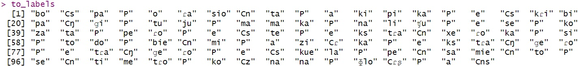
Now we ‘index’ our convert vector with
to_labels.
If to_labels is c("i","o","a"), then
wav_files will be the file paths for i.wav,
o.wav, and a.wav.
If this doesn’t make sense, think of convert as a
dictionary.
- On the left side are the words (the IPA labels like “i”, “o”,
“a”).
- On the right side are the definitions (the file paths like
“…/i.wav”, “…/o.wav”, “…/a.wav”).
We then write:
wav_files <- convert[to_labels]Here, you’re saying: “Go into my dictionary and pull out the entries
whose names match what’s in to_labels.”
So if:
to_labels <- c("i","o","a")… then R will look up “i”,
“o”, and “a” inside the convert dictionary, and return
their matching file paths:
"…/i.wav" "…/o.wav" "…/a.wav"
to_labels is your list of “keys”, and R gives you back
the “values.”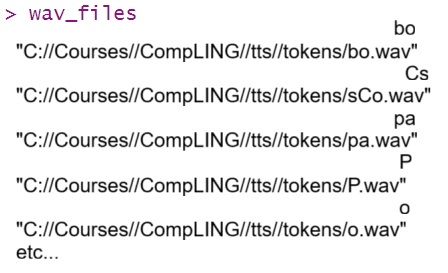
If a file name is missing, we can have r throw us a warning:
if (any(is.na(wav_files))) {
warning("Missing audio for: ", paste(to_labels[is.na(wav_files)], collapse = ", "))
}if there are any NAs
(is.na) in the wav_files object, then…paste the name of the NA file in
wave_files.,.Now we’re going to load three libraries that deal with sound.
library(tuneR)
library(audio)
library(seewave)The tuneR package is what allows R to work directly with
audio files, especially .wav files. It lets us read sounds
into R, manipulate them, and write them back out again. For example,
when we load a recorded syllable or segment, readWave()
turns the file into a special Wave object that stores all the details of
the sound—its samples, sampling rate, number of channels (mono or
stereo), and bit depth. This makes it possible to cut, join, or
otherwise modify the recordings within R.
By contrast, the audio package is focused on playback.
Once we’ve created or edited a sound in R, the audio package provides
the connection to our computer’s sound system so that we can hear it
immediately. Together, the two packages complement each other:
tuneR handles sound files and data, while
audio makes it possible to listen to what we’ve
built.
The seewave package is designed for analysing and
visualising sounds. While tuneR gives us the raw ability to
load and save audio, seewave adds specialised tools for looking inside
the signal. With functions like oscillo() for viewing the
waveform, spec() for plotting a frequency spectrum, and
spectro() for creating spectrograms, it allows us to see
how sounds vary across time and frequency. These visualisations are
especially useful in linguistics and phonetics, since they let us
connect what we hear with measurable patterns in the acoustic signal. In
short, seewave is the package that helps us see sound, not just hear it.
tuneR is a required library for the tts generator
It Reads .wav into R (readWave()), writes them
out (writeWave()), and creates/modifies Wave objects.
We will use it to read in our segment and syllable tokens.
ai=readWave("C:\\Users\\mikey\\Dropbox\\Courses\\Computational Linguistics - LING 349 Fall\\Week 9 & 10 - TTS\\tokens\\ai.wav")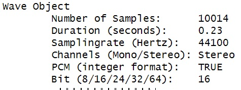
seewave is not essential to the tts generator, but it’s
nice to have
It plots waveforms (oscillo()), spectra
(spec()), and spectrograms (spectro()).
oscillo(ai)
spec(ai)
spectro(ai, flim = c(0, 5))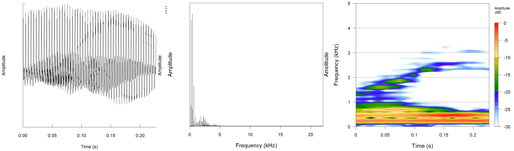
audio is needed to playback inside R.
Functions like audioSample() and play() let
you listen to sounds without saving them and opening them
externally.
play(ai)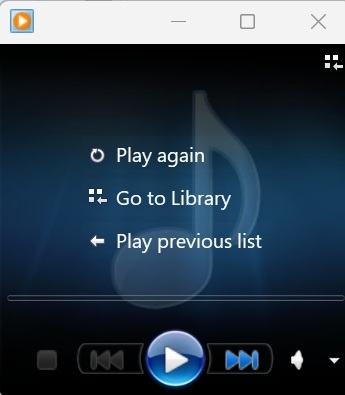
We’re going to use the data in our wave_files object,
and read in each of the associated sound tokens in order.
We can do this using the lapply function.
wavs <- lapply(wav_files, readWave)lapply loops over a list (wav_files) and
applys a function (readWave) to each element.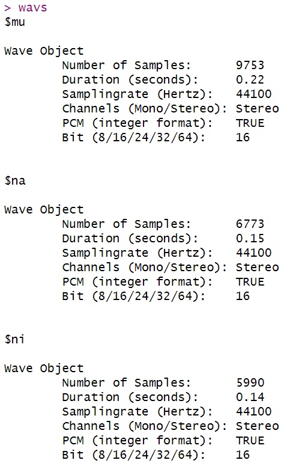
Now we just need to stitch them together
sound <- do.call(c, lapply(wavs, function(w) w@left))do.call(c, list_of_vectors) is a trick that says: “take
this list of vectors (the wave forms in their numeric format) and feed
them all into c() as separate arguments. (the numbers of
wave form 1, the numbers of wave form 2, the numbers of wave form 3
etc.”wavs is a list of Wave objects we just made.lapply(..., function(w) w@left) means:
play(sound)Then you can create as a .wav file if you’d like.
out = Wave(left = sound,
samp.rate = 44100, bit = 16)And then save it to your HD.
writeWave(out, "C:/Courses/CompLING/TTS/out.wav")